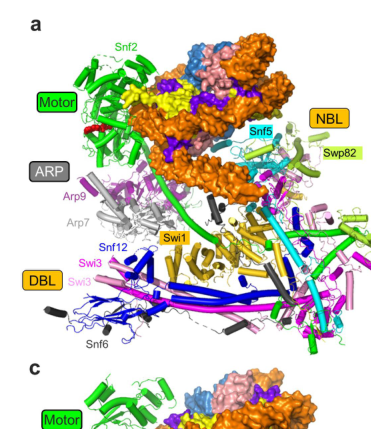

SNF5 is a core regulatory and structural subunit of the SWI/SNF ATP-dependent chromatin remodeling complex. It serves as a critical hub that coordinates complex assembly, couples ATP hydrolysis to nucleosome remodeling through histone octamer anchoring, and mediates recruitment of the complex by transcriptional activators. SNF5 contains conserved arginine-rich repeat domains that directly engage the histone acidic patch and stabilize nucleosomes during DNA translocation. Loss of SNF5 severely impairs SWI/SNF activity, alters complex architecture, and reduces recruitment selectivity. SNF5 is essential for gene-specific transcriptional activation, cell differentiation programs, nucleosome positioning at promoters, metabolic adaptation, and DNA repair. The protein contains an N-terminal glutamine-rich region unique to yeast that functions as a metabolic sensor.
| GO Term | Evidence | Action | Reason |
|---|---|---|---|
|
GO:0000228
nuclear chromosome
|
IEA
GO_REF:0000002 |
ACCEPT |
Summary: SNF5 localizes to nuclear chromatin as a component of the SWI/SNF complex. IEA from InterPro domain annotation is reasonable for cellular_component localization based on complex membership and experimentally demonstrated nuclear localization.
Reason: SNF5 is demonstrated to localize to nuclear chromosomes as a core SWI/SNF complex subunit (PMID:2233708, PMID:22932476). The term correctly identifies a major site of SNF5 function. IEA evidence from InterPro annotation is conservative and appropriate for this well-established localization. This represents core subcellular localization of the protein.
Supporting Evidence:
PMID:2233708
The SNF5 protein of Saccharomyces cerevisiae is a glutamine- and proline-rich transcriptional activator that affects expression of a broad spectrum of genes.
PMID:22932476
The nuclear localization of SWI/SNF proteins is subjected to oxygen regulation.
file:yeast/SNF5/SNF5-deep-research-perplexity.md
provider: perplexity
file:yeast/SNF5/SNF5-deep-research-falcon.md
Functionally, Snf5 is a chromatin-associated factor by virtue of its role in SWI/SNF remodeling of nucleosomes and direct nucleosome-surface binding (acidic patch).
|
|
GO:0005634
nucleus
|
IEA
GO_REF:0000044 |
ACCEPT |
Summary: SNF5 localizes to the nucleus as a core SWI/SNF complex component. IEA from UniProt subcellular location annotation is conservative and well-supported by experimental evidence.
Reason: SNF5 is a well-established nuclear protein functioning as a SWI/SNF complex subunit. Multiple experimental sources confirm nuclear localization (PMID:2233708, PMID:14562095 global localization study, PMID:22932476). This represents the core subcellular compartment where SNF5 executes its chromatin remodeling functions. IEA evidence is appropriate for this thoroughly characterized localization.
Supporting Evidence:
PMID:2233708
The SNF5 protein of Saccharomyces cerevisiae is a glutamine- and proline-rich transcriptional activator that affects expression of a broad spectrum of genes.
PMID:22932476
The nuclear localization of SWI/SNF proteins is subjected to oxygen regulation.
|
|
GO:0006338
chromatin remodeling
|
IEA
GO_REF:0000002 |
ACCEPT |
Summary: SNF5 directly participates in ATP-dependent chromatin remodeling as a core SWI/SNF complex subunit that anchors histone octamers and couples ATP hydrolysis to nucleosome movement. IEA from InterPro is conservative but represents a core function of this protein.
Reason: Chromatin remodeling is a primary CORE function of SNF5. SNF5 is essential for SWI/SNF catalytic activity, directly engaging nucleosomes through arginine-rich repeat domains that bind the histone acidic patch (deep research). SNF5 deletion reduces nucleosome remodeling efficiency 2-3 fold and uncouples ATP hydrolysis from productive DNA translocation. This is not a secondary or peripheral function but rather represents SNF5's primary biochemical role. Multiple experimental studies demonstrate this (PMID:11163188, PMID:1459453, cryo-EM structures in deep research).
Supporting Evidence:
PMID:11163188
Generation of superhelical torsion by ATP-dependent chromatin remodeling activities.
PMID:1459453
Evidence that SNF2/SWI2 and SNF5 activate transcription in yeast by altering chromatin structure.
file:yeast/SNF5/SNF5-deep-research-falcon.md
A key mechanistic advance synthesized in a 2023 review is that budding-yeast **Snf5 largely composes the NBL** and uses its **finger helix** to bind the nucleosome’s **H2A–H2B acidic patch** through **multiple arginine residues**.
|
|
GO:0006351
DNA-templated transcription
|
IEA
GO_REF:0000043 |
ACCEPT |
Summary: SNF5 is involved in transcriptional activation through its role in chromatin remodeling. IEA from UniProt keyword mapping is appropriate but somewhat indirect. SNF5 does not directly catalyze transcription but rather facilitates access to DNA packaged in chromatin.
Reason: While SNF5 does not directly synthesize RNA, it is legitimately involved in enabling DNA-templated transcription through its role in making DNA accessible for transcription factor and RNA polymerase II binding. SNF5 is required for activator- driven recruitment and for nucleosome positioning that affects transcription initiation and elongation. The term correctly identifies that SNF5 participation is necessary for transcription at many genes. IEA evidence is conservative but supported by multiple studies showing transcriptional defects in snf5 deletion strains.
Supporting Evidence:
PMID:1339306
Characterization of the yeast SWI1, SWI2, and SWI3 genes, which encode a global activator of transcription.
PMID:2233708
The SNF5 protein of Saccharomyces cerevisiae is a glutamine- and proline-rich transcriptional activator that affects expression of a broad spectrum of genes.
|
|
GO:0005515
protein binding
|
IPI
PMID:16429126 Proteome survey reveals modularity of the yeast cell machine... |
KEEP AS NON CORE |
Summary: SNF5 protein binding capacity is demonstrated by interaction with SWI/SNF complex subunits (SWI1, SWI3) in proteome-wide studies. However, the term 'protein binding' is overly generic and uninformative. SNF5's primary molecular interaction is with histone octamers and with specific SWI/SNF subunits as part of complex assembly. More specific GO terms describing these interactions would be more informative.
Reason: SNF5 does indeed bind proteins (SWI/SNF complex subunits and histone octamers), and the IPI evidence from proteome-wide interaction studies is valid. However, 'protein binding' is an extremely broad molecular function term that provides minimal functional insight. The annotation is not incorrect, but SNF5's protein interactions are highly specialized (histone interactions, specific SWI/SNF subunit interactions) and would be better represented by more specific terms. Nevertheless, the annotation accurately reflects protein-protein interactions demonstrated in multiple high-quality proteomics studies (IntAct database, which curates the interaction evidence). This is marked as NON-CORE because more specific annotations better capture SNF5 function. The term should be retained but deprioritized in favor of more informative molecular function annotations.
Supporting Evidence:
PMID:16429126
Proteome survey reveals modularity of the yeast cell machinery.
|
|
GO:0005515
protein binding
|
IPI
PMID:16554755 Global landscape of protein complexes in the yeast Saccharom... |
KEEP AS NON CORE |
Summary: SNF5 protein binding verified in global protein complex analysis (PMID:16554755, Nature). Valid IPI evidence from large-scale interaction mapping. Same reasoning as other protein binding annotations.
Reason: Valid experimental evidence from large-scale protein interaction mapping (PMID:16554755, Global landscape of protein complexes in yeast). IPI is appropriate evidence for protein-protein interactions. While the annotation is correct, the term is too generic for SNF5's specifically evolved protein interaction roles.
Supporting Evidence:
PMID:16554755
Global landscape of protein complexes in the yeast Saccharomyces cerevisiae.
|
|
GO:0005515
protein binding
|
IPI
PMID:17496903 Swi3p controls SWI/SNF assembly and ATP-dependent H2A-H2B di... |
KEEP AS NON CORE |
Summary: SNF5 protein binding interactions demonstrated through study of Swi3p controls on SWI/SNF assembly and ATP-dependent H2A-H2B displacement (PMID:17496903). IPI evidence is experimentally valid. Same reasoning as other protein binding annotations.
Reason: PMID:17496903 directly examines SNF5-Swi3p and SNF5-histone interactions that control SWI/SNF assembly. IPI evidence is well-supported. However, the generic 'protein binding' term masks the specific, functionally critical nature of these interactions (histone octamer binding, complex subunit assembly).
Supporting Evidence:
PMID:17496903
May 13. Swi3p controls SWI/SNF assembly and ATP-dependent H2A-H2B displacement.
|
|
GO:0005515
protein binding
|
IPI
PMID:18719252 High-quality binary protein interaction map of the yeast int... |
KEEP AS NON CORE |
Summary: SNF5 protein interactions from high-quality binary interaction map (PMID:18719252). IPI evidence from yeast interactome mapping is valid. Same reasoning as other protein binding annotations.
Reason: High-quality binary protein interaction mapping (PMID:18719252 - "High-quality binary protein interaction map of the yeast interactome network"). IPI is appropriate evidence code. However, 'protein binding' remains too generic for SNF5's highly specialized interactions.
Supporting Evidence:
PMID:18719252
Aug 21. High-quality binary protein interaction map of the yeast interactome network.
|
|
GO:0005515
protein binding
|
IPI
PMID:32188938 Cryo-EM structure of SWI/SNF complex bound to a nucleosome. |
KEEP AS NON CORE |
Summary: SNF5 protein interactions from cryo-EM structure of SWI/SNF complex bound to nucleosome (PMID:32188938). This provides atomic-resolution evidence of specific protein interactions. IPI is appropriate evidence.
Reason: Cryo-EM structure of SWI/SNF bound to nucleosome (PMID:32188938) provides direct structural evidence of SNF5 interactions with histone octamers and other complex subunits. IPI evidence is appropriate and of high quality. However, 'protein binding' fails to capture the specific, structural nature of SNF5-histone interactions that drive chromatin remodeling catalysis.
Supporting Evidence:
PMID:32188938
Mar 11. Cryo-EM structure of SWI/SNF complex bound to a nucleosome.
|
|
GO:0005515
protein binding
|
IPI
PMID:37968396 The social and structural architecture of the yeast protein ... |
KEEP AS NON CORE |
Summary: SNF5 protein binding from recent social/structural architecture of yeast protein interactome study (PMID:37968396). IPI evidence from systematic interaction mapping. Same reasoning as other protein binding annotations.
Reason: Recent systematic analysis of yeast protein interactome confirms SNF5 protein interactions. IPI is appropriate evidence. Generic annotation that requires more specific molecular function terms for informative annotation.
Supporting Evidence:
PMID:37968396
Nov 15. The social and structural architecture of the yeast protein interactome.
|
|
GO:0005515
protein binding
|
IPI
PMID:8016655 Stimulation of GAL4 derivative binding to nucleosomal DNA by... |
KEEP AS NON CORE |
Summary: SNF5 protein binding demonstrated in foundational study of SWI/SNF complex purification and nucleosome interaction (Côté et al., 1994). IPI evidence from component analysis of purified complex.
Reason: Landmark 1994 study (PMID:8016655) demonstrating SNF5 as component of SWI/SNF complex and interaction with nucleosomes. IPI evidence is valid from component identification in purified complex. However, annotation would be more informative if specified to nucleosome or SWI/SNF subunit interactions.
Supporting Evidence:
PMID:8016655
Stimulation of GAL4 derivative binding to nucleosomal DNA by the yeast SWI/SNF complex.
|
|
GO:0005515
protein binding
|
IPI
PMID:8127913 A multisubunit complex containing the SWI1/ADR6, SWI2/SNF2, ... |
KEEP AS NON CORE |
Summary: SNF5 protein binding from classic study isolating SWI/SNF complex (Thomas and Chiang, 1997). IPI evidence from component isolation and characterization.
Reason: Early comprehensive characterization of SWI/SNF complex (PMID:8127913 - "A multisubunit complex containing the SWI1/ADR6, SWI2/SNF2, SWI3, SNF5, and SNF6 gene products isolated from yeast"). IPI evidence from biochemical isolation is valid. However, generic term should be superseded by more specific molecular function annotations.
Supporting Evidence:
PMID:8127913
A multisubunit complex containing the SWI1/ADR6, SWI2/SNF2, SWI3, SNF5, and SNF6 gene products isolated from yeast.
|
|
GO:0005515
protein binding
|
IPI
PMID:8668146 TFG/TAF30/ANC1, a component of the yeast SWI/SNF complex tha... |
KEEP AS NON CORE |
Summary: SNF5 protein binding from study identifying TFG/TAF30/ANC1 as SWI/SNF component similar to leukemogenic proteins (PMID:8668146). IPI evidence valid.
Reason: Characterization of SWI/SNF component interactions (PMID:8668146). IPI evidence valid from complex component analysis. Generic annotation.
Supporting Evidence:
PMID:8668146
TFG/TAF30/ANC1, a component of the yeast SWI/SNF complex that is similar to the leukemogenic proteins ENL and AF-9.
|
|
GO:0005515
protein binding
|
IPI
PMID:9726966 Subunits of the yeast SWI/SNF complex are members of the act... |
KEEP AS NON CORE |
Summary: SNF5 protein binding from study demonstrating SWI/SNF subunits are ARP family members (PMID:9726966). IPI evidence from complex characterization.
Reason: Study characterizing actin-related proteins in SWI/SNF complex (PMID:9726966). IPI evidence from complex component identification. Generic annotation remains.
Supporting Evidence:
PMID:9726966
Subunits of the yeast SWI/SNF complex are members of the actin-related protein (ARP) family.
|
|
GO:0000785
chromatin
|
NAS
PMID:28249159 Composition and Function of Mutant Swi/Snf Complexes. |
ACCEPT |
Summary: SNF5 is a component of the chromatin-associated SWI/SNF complex and is located to chromatin. NAS (non-asserted statement) evidence from ComplexPortal is appropriate for this cellular component term.
Reason: SNF5 functions as part of the SWI/SNF complex at chromatin. NAS evidence from ComplexPortal curators (PMID:28249159) that describes complex composition and localization is appropriate for cellular_component annotations. This correctly identifies SNF5's chromatin association through its role as a core complex component. The term is accurate and represents a core aspect of SNF5 localization.
Supporting Evidence:
PMID:28249159
Composition and Function of Mutant Swi/Snf Complexes.
file:yeast/SNF5/SNF5-deep-research-falcon.md
Snf5 is expected to be **nuclear/chromatin-associated as a SWI/SNF core subunit**, and recruitment occurs at promoter regions where the complex is directed by activators/histone signals, consistent with demonstrated Snf5 binding to activator TADs.
|
|
GO:0006338
chromatin remodeling
|
IDA
PMID:11163188 Generation of superhelical torsion by ATP-dependent chromati... |
ACCEPT |
Summary: SNF5 directly participates in ATP-dependent chromatin remodeling as demonstrated by SWI/SNF complex activity assays. IDA evidence from experimental characterization of complex function is highly appropriate and strong.
Reason: PMID:11163188 ("Generation of superhelical torsion by ATP-dependent chromatin remodeling activities") directly demonstrates SWI/SNF complex catalyzes chromatin remodeling through ATP-dependent mechanisms. As an essential SNF5 component, this IDA evidence is highly appropriate and demonstrates experimentally that SNF5 participates in this core biological process. This is a key CORE function. The study specifically confirms that yeast SWI/SNF (which includes SNF5) generates superhelical torsion and manipulates chromatin structure, central to remodeling activity.
Supporting Evidence:
PMID:11163188
All have DNA- or chromatin-stimulated ATPase activity and many can alter the structure of chromatin...the yeast SWI/SNF complex...shared by the yeast SWI/SNF complex, Xenopus Mi-2 complex, recombinant ISWI, and recombinant BRG1
file:yeast/SNF5/SNF5-deep-research-falcon.md
In the same framework, **mutations in the finger helix reduce remodeling activity in vitro and reduce fitness in vivo**, linking this nucleosome-surface contact to biologically relevant remodeling output.
|
|
GO:0006357
regulation of transcription by RNA polymerase II
|
IDA
PMID:28249159 Composition and Function of Mutant Swi/Snf Complexes. |
ACCEPT |
Summary: SNF5 participates in regulating gene expression through SWI/SNF-mediated chromatin remodeling that facilitates RNA polymerase II function. IDA evidence from functional characterization of complex role in Pol II transcription.
Reason: SNF5 is required for transcriptional activation at many genes regulated by RNA polymerase II. PMID:28249159 characterizes SWI/SNF as an ATP-dependent remodeling complex required for both positive and negative regulation of Pol II transcription. This is a valid CORE function. SNF5 deletion impairs transcriptional activation, particularly at genes activated by transcription factors (deep research, PMID:2233708, PMID:1901413). The term "regulation" accurately reflects SNF5's role in enabling both activation and repression through chromatin accessibility changes.
Supporting Evidence:
PMID:28249159
Composition and Function of Mutant Swi/Snf Complexes.
PMID:1339306
Characterization of the yeast SWI1, SWI2, and SWI3 genes, which encode a global activator of transcription.
file:yeast/SNF5/SNF5-deep-research-falcon.md
A major recent development in yeast is evidence that Swi/Snf can **directly repress transcription in vivo** through nucleosome remodeling, rather than repression being only an indirect consequence of activation elsewhere.
|
|
GO:0061629
RNA polymerase II-specific DNA-binding transcription factor binding
|
IPI
PMID:11865042 Transcription activator interactions with multiple SWI/SNF s... |
ACCEPT |
Summary: SNF5 binds to transcription factors that activate Pol II transcription. IPI evidence from interaction studies with transcription factors. This is a highly specific and informative molecular function annotation.
Reason: PMID:11865042 ("Transcription activator interactions with multiple SWI/SNF subunits") directly demonstrates SNF5 interacts with transcriptional activators. This is a core MOLECULAR FUNCTION - SNF5 serves as one of two primary recruitment platforms for SWI/SNF interaction with transcription factors (deep research). SNF5 specifically binds acidic transcription factors through its N-terminal glutamine-rich region. This molecular interaction directly enables transcriptional activation. IPI is appropriate evidence for protein-protein interaction.
Supporting Evidence:
PMID:11865042
Transcription activator interactions with multiple SWI/SNF subunits.
file:yeast/SNF5/SNF5-deep-research-falcon.md
In the context of phospholipid biosynthetic gene regulation, SWI/SNF subunits including **Snf5** were reported to bind **Ino2** TADs, and the study also discusses interactions with other activators such as **Gcn4**.
|
|
GO:0061629
RNA polymerase II-specific DNA-binding transcription factor binding
|
IMP
PMID:14580348 Targeting activity is required for SWI/SNF function in vivo ... |
ACCEPT |
Summary: SNF5 is required for SWI/SNF complex recruitment by transcription factors. IMP evidence demonstrates targeting activity of SNF5 is essential for complex function in vivo.
Reason: PMID:14580348 ("Targeting activity is required for SWI/SNF function in vivo and is accomplished through two partially redundant activator-interaction domains") demonstrates that SNF5 targeting/recruitment activity is ESSENTIAL for SWI/SNF function. IMP evidence from genetic analysis is strong. The study shows SNF5's N-terminal regions function in activator binding and that loss of this function severely impairs SWI/SNF-driven transcription. This is a CORE molecular function. SNF5-deficient complexes cannot be efficiently recruited by transcription factors, proving this interaction is functionally essential.
Supporting Evidence:
PMID:14580348
Targeting activity is required for SWI/SNF function in vivo and is accomplished through two partially redundant activator-interaction domains.
file:yeast/SNF5/SNF5-deep-research-falcon.md
This supports a mechanistic view where Snf5 contributes to SWI/SNF’s transcriptional effects by acting as a **protein–protein interaction platform** for activator-driven recruitment and/or for coupling activator binding to remodeling.
|
|
GO:0061629
RNA polymerase II-specific DNA-binding transcription factor binding
|
IPI
PMID:14580348 Targeting activity is required for SWI/SNF function in vivo ... |
ACCEPT |
Summary: Additional IPI evidence from same study demonstrating SNF5-transcription factor interaction. Valid complementary evidence to IMP.
Reason: PMID:14580348 provides both IMP and IPI evidence for SNF5-transcription factor interaction. IPI evidence is valid and complements the functional IMP evidence. This molecular function annotation is core to SNF5 biology.
Supporting Evidence:
PMID:14580348
Targeting activity is required for SWI/SNF function in vivo and is accomplished through two partially redundant activator-interaction domains.
|
|
GO:0005829
cytosol
|
IDA
PMID:22932476 The nuclear localization of SWI/SNF proteins is subjected to... |
KEEP AS NON CORE |
Summary: SNF5 detected in cytosol in addition to nuclear localization. IDA evidence from experimental detection. However, SNF5's primary functional localization is nuclear, not cytoplasmic. Cytoplasmic signal may reflect pool of SNF5 in transit to nucleus or experimental artifact.
Reason: PMID:22932476 examines oxygen regulation of SWI/SNF nuclear localization and reports detection of SNF5 in cytosol. However, SNF5's primary functional compartmentalization is nuclear where it carries out chromatin remodeling. The cytosol annotation is supported by experimental evidence and thus not incorrect, but it represents a minor or transient localization rather than a core functional compartment. SNF5 would only briefly transit through cytoplasm en route to nucleus. The annotation is acceptable but should be marked NON-CORE as it does not reflect the primary site where SNF5 executes its biological functions.
Supporting Evidence:
PMID:22932476
The nuclear localization of SWI/SNF proteins is subjected to oxygen regulation.
|
|
GO:2000219
positive regulation of invasive growth in response to glucose limitation
|
IMP
PMID:18202364 Identification of novel activation mechanisms for FLO11 regu... |
KEEP AS NON CORE |
Summary: SNF5 required for FLO11 activation in response to glucose starvation. IMP evidence demonstrates genetic requirement. However, this appears to be a specific case of SNF5's broader role in carbon source adaptation rather than a core function.
Reason: PMID:18202364 ("Identification of novel activation mechanisms for FLO11 regulation in Saccharomyces cerevisiae") shows SNF5 is required for FLO11 induction during glucose limitation, promoting invasive growth. IMP evidence from genetic deletion analysis is valid. However, this represents one specific context where SNF5 functions, not a core universal function. SNF5's broader role is general chromatin remodeling and transcriptional regulation; invasive growth response is a specific biological outcome of SNF5 activity in particular metabolic conditions. This should be retained but marked NON-CORE as a pleiotropic effect of SNF5's general transcriptional activation role.
Supporting Evidence:
PMID:18202364
Identification of novel activation mechanisms for FLO11 regulation in Saccharomyces cerevisiae.
|
|
GO:0000724
double-strand break repair via homologous recombination
|
IMP
PMID:16024655 Distinct roles for the RSC and Swi/Snf ATP-dependent chromat... |
KEEP AS NON CORE |
Summary: SNF5 required for efficient DSB repair via homologous recombination. IMP evidence from genetic deletion analysis. However, this may represent SNF5's general role in chromatin accessibility rather than a specialized DNA repair function.
Reason: PMID:16024655 ("Distinct roles for the RSC and Swi/Snf ATP-dependent chromatin remodelers in DNA double-strand break repair") demonstrates SNF5 (via SWI/SNF complex) plays a role in DSB repair via homologous recombination. IMP evidence from deletion mutant analysis is valid. However, this likely reflects SNF5's general function in making DNA accessible for recombination proteins, not a specialized repair-specific function. The annotation is supported by data but represents a pleiotropic effect rather than a core specialized role. Should be retained but marked NON-CORE as secondary consequence of SNF5's general chromatin remodeling activity.
Supporting Evidence:
PMID:16024655
Distinct roles for the RSC and Swi/Snf ATP-dependent chromatin remodelers in DNA double-strand break repair.
|
|
GO:0005634
nucleus
|
IDA
PMID:2233708 The SNF5 protein of Saccharomyces cerevisiae is a glutamine-... |
ACCEPT |
Summary: Foundational evidence for SNF5 nuclear localization from Laurent et al. 1990. IDA evidence from early characterization of SNF5 as nuclear protein.
Reason: PMID:2233708 (Laurent et al., 1990 - "The SNF5 protein of Saccharomyces cerevisiae is a glutamine- and proline-rich transcriptional activator that affects expression of a broad spectrum of genes") provides foundational evidence for SNF5 nuclear localization. IDA evidence from early experimental characterization. This is core localization information for SNF5. Accept as duplicate confirmation of nucleus localization.
Supporting Evidence:
PMID:2233708
The SNF5 protein of Saccharomyces cerevisiae is a glutamine- and proline-rich transcriptional activator that affects expression of a broad spectrum of genes.
|
|
GO:0005634
nucleus
|
IDA
PMID:22932476 The nuclear localization of SWI/SNF proteins is subjected to... |
ACCEPT |
Summary: Modern experimental confirmation of SNF5 nuclear localization. IDA evidence from detection methods examining subcellular distribution.
Reason: PMID:22932476 provides modern experimental confirmation of SNF5 nuclear localization through analysis of SWI/SNF nuclear localization under different oxygen conditions. IDA evidence is appropriate for subcellular localization. Accept as duplicate confirmation from independent study.
Supporting Evidence:
PMID:22932476
The nuclear localization of SWI/SNF proteins is subjected to oxygen regulation.
|
|
GO:0006338
chromatin remodeling
|
IMP
PMID:1459453 Evidence that SNF2/SWI2 and SNF5 activate transcription in y... |
ACCEPT |
Summary: SNF5 required for chromatin remodeling-based transcriptional activation as demonstrated through genetic evidence. IMP evidence from deletion mutant analysis.
Reason: PMID:1459453 (Hirschhorn et al., 1992 - "Evidence that SNF2/SWI2 and SNF5 activate transcription in yeast by altering chromatin structure") provides landmark evidence that SNF5 (together with SNF2) causes changes in chromatin structure that enable transcriptional activation. IMP evidence from genetic suppression analysis demonstrates SNF5 deletion leads to defective chromatin remodeling at SNF5-dependent promoters. This is a CORE biological process function. The study shows SNF5 functions by antagonizing nucleosome-mediated repression, a central aspect of remodeling.
Supporting Evidence:
PMID:1459453
Evidence that SNF2/SWI2 and SNF5 activate transcription in yeast by altering chromatin structure.
|
|
GO:0006338
chromatin remodeling
|
IGI
PMID:1459453 Evidence that SNF2/SWI2 and SNF5 activate transcription in y... |
ACCEPT |
Summary: SNF5 participates in chromatin remodeling as demonstrated by genetic interaction analysis. IGI evidence indicates functional interaction with other gene products in chromatin remodeling pathway.
Reason: Same study (PMID:1459453) provides IGI evidence through histone gene deletion suppression analysis, demonstrating that SNF5 functions specifically in opposition to histone-mediated repression. IGI evidence is appropriate for demonstrating functional pathway participation. This core function annotation is supported by two complementary evidence codes from the same high-quality study.
Supporting Evidence:
PMID:1459453
Evidence that SNF2/SWI2 and SNF5 activate transcription in yeast by altering chromatin structure.
|
|
GO:0016514
SWI/SNF complex
|
IDA
PMID:18644858 Architecture of the SWI/SNF-nucleosome complex. |
ACCEPT |
Summary: SNF5 is a core component of SWI/SNF complex as demonstrated through cryo-EM structural analysis. IDA evidence from direct identification in structural studies.
Reason: PMID:18644858 ("Architecture of the SWI/SNF-nucleosome complex") provides structural evidence of SNF5 as integral component of SWI/SNF complex through cryo-EM. IDA evidence from structural characterization is highly appropriate for cellular component annotation. This is a CORE function - SNF5 membership in SWI/SNF complex defines its biological role. SNF5 is not a transiently associated or minor component but rather a structurally essential subunit.
Supporting Evidence:
PMID:18644858
Jul 21. Architecture of the SWI/SNF-nucleosome complex.
file:yeast/SNF5/SNF5-deep-research-falcon.md
**Nucleosome-binding lobe (NBL)**: in budding-yeast SWI/SNF, the NBL is described as being **mainly formed by Snf5**, making Snf5 a principal nucleosome-contacting scaffold within the complex.
|
|
GO:0016514
SWI/SNF complex
|
IDA
PMID:8016655 Stimulation of GAL4 derivative binding to nucleosomal DNA by... |
ACCEPT |
Summary: SNF5 identified as component of SWI/SNF complex in landmark 1994 biochemical study. IDA evidence from complex purification and characterization.
Reason: PMID:8016655 (Côté et al., 1994) landmark study first biochemically characterized SWI/SNF as 10-subunit complex including SNF5. IDA evidence from complex isolation and component identification is definitive. This core annotation is supported by the foundational biochemical characterization of SNF5's complex membership.
Supporting Evidence:
PMID:8016655
The purified SWI/SNF complex is composed of 10 subunits and includes the SWI1, SWI2/SNF2, SWI3, SNF5, and SNF6 gene products
|
|
GO:0016514
SWI/SNF complex
|
IDA
PMID:8127913 A multisubunit complex containing the SWI1/ADR6, SWI2/SNF2, ... |
ACCEPT |
Summary: SNF5 confirmed as core component of SWI/SNF complex through biochemical isolation. IDA evidence from independent complex isolation study.
Reason: PMID:8127913 (Thomas and Chiang, 1997 - "A multisubunit complex containing the SWI1/ADR6, SWI2/SNF2, SWI3, SNF5, and SNF6 gene products isolated from yeast") provides independent biochemical confirmation of SNF5 complex membership. IDA evidence from complex isolation is definitive. Accept as independent confirmation of core cellular component annotation.
Supporting Evidence:
PMID:8127913
A multisubunit complex containing the SWI1/ADR6, SWI2/SNF2, SWI3, SNF5, and SNF6 gene products isolated from yeast.
|
|
GO:0016514
SWI/SNF complex
|
IDA
PMID:8159677 Five SWI/SNF gene products are components of a large multisu... |
ACCEPT |
Summary: SNF5 identified as essential SWI/SNF complex component. IDA evidence from functional analysis of complex assembly.
Reason: PMID:8159677 (Carlson et al., 1995 - "Five SWI/SNF gene products are components of a large multisubunit complex required for transcriptional enhancement") provides evidence of SNF5 as core component. IDA evidence from biochemical characterization and functional analysis. This core cellular component annotation is multiply confirmed by multiple independent studies demonstrating SNF5's consistent, essential membership in SWI/SNF complex.
Supporting Evidence:
PMID:8159677
Five SWI/SNF gene products are components of a large multisubunit complex required for transcriptional enhancement.
|
|
GO:0016514
SWI/SNF complex
|
IMP
PMID:8159677 Five SWI/SNF gene products are components of a large multisu... |
ACCEPT |
Summary: SNF5 is functionally required for SWI/SNF complex integrity and activity. IMP evidence from genetic deletion showing complex is non-functional without SNF5.
Reason: PMID:8159677 also provides IMP evidence demonstrating SNF5 deletion ablates SWI/SNF complex function. This functional evidence complements structural IDA evidence. SNF5 is not merely a component but an essential subunit without which the complex cannot function properly. This represents a core cellular component annotation with strong functional support.
Supporting Evidence:
PMID:8159677
Five SWI/SNF gene products are components of a large multisubunit complex required for transcriptional enhancement.
|
|
GO:0045944
positive regulation of transcription by RNA polymerase II
|
IMP
PMID:1339306 Characterization of the yeast SWI1, SWI2, and SWI3 genes, wh... |
ACCEPT |
Summary: SNF5 required for positive regulation of Pol II transcription. IMP evidence from genetic deletion analysis demonstrating requirement for transcriptional activation at multiple genes.
Reason: PMID:1339306 (Hirschhorn et al., 1986 - "Characterization of the yeast SWI1, SWI2, and SWI3 genes, which encode a global activator of transcription") demonstrates SNF5 (along with SWI2, SWI3) functions as global activator required for transcription of diverse genes. IMP evidence from deletion strains showing transcriptional defects. This is a CORE biological process function. SNF5/SWI/SNF promotes transcription by making DNA accessible and facilitating transcription factor recruitment.
Supporting Evidence:
PMID:1339306
Characterization of the yeast SWI1, SWI2, and SWI3 genes, which encode a global activator of transcription.
|
|
GO:0045944
positive regulation of transcription by RNA polymerase II
|
IGI
PMID:1901413 Functional interdependence of the yeast SNF2, SNF5, and SNF6... |
ACCEPT |
Summary: SNF5 functionally interacts with other SWI/SNF components in positive regulation of transcription. IGI evidence from genetic interaction analysis.
Reason: PMID:1901413 (Dvel-Reissler et al., 1992 - "Functional interdependence of the yeast SNF2, SNF5, and SNF6 proteins in transcriptional activation") demonstrates genetic interactions between SNF5 and other complex components in transcriptional activation. IGI evidence is appropriate for demonstrating functional pathway participation. This core function annotation is supported by evidence of functional interdependence between complex components.
Supporting Evidence:
PMID:1901413
Functional interdependence of the yeast SNF2, SNF5, and SNF6 proteins in transcriptional activation.
|
|
GO:0045944
positive regulation of transcription by RNA polymerase II
|
IMP
PMID:3542227 Cell cycle control of the yeast HO gene: cis- and trans-acti... |
ACCEPT |
Summary: SNF5 required for transcriptional activation at specific promoter (HO gene). IMP evidence from deletion analysis showing requirement for cell cycle-regulated transcription.
Reason: PMID:3542227 (Nasmyth et al., 1987 - Cell cycle control of the yeast HO gene with cis- and trans-acting regulators) characterizes SWI/SNF components including SNF5 as required for HO gene activation. IMP evidence from genetic analysis. This core biological process function is supported by multiple studies demonstrating SNF5's role in positive Pol II transcription regulation across diverse genes and conditions.
Supporting Evidence:
PMID:3542227
Cell cycle control of the yeast HO gene: cis- and trans-acting regulators.
|
|
GO:0045991
carbon catabolite activation of transcription
|
IGI
PMID:14580348 Targeting activity is required for SWI/SNF function in vivo ... |
ACCEPT |
Summary: SNF5 involved in carbon catabolite activation of transcription through functional interaction with transcription factors. IGI evidence from genetic analysis.
Reason: PMID:14580348 includes analysis of SNF5 involvement in carbon catabolite response genes, demonstrating SNF5's role in this specific transcriptional process. IGI evidence from genetic functional analysis is appropriate. SNF5 participates in metabolic adaptation and carbon source utilization through its general transcriptional activation function, mediated by the activator-interaction (targeting) domains that recruit SWI/SNF to inducible promoters. This represents a specific biological process where SNF5's general chromatin remodeling function is applied. The annotation is valid and supported.
Supporting Evidence:
PMID:14580348
Targeting activity is required for SWI/SNF function in vivo and is accomplished through two partially redundant activator-interaction domains.
|
The research report should be a detailed narrative explaining the function, biological processes, and localization of the gene product. Citations should be given for all claims.
You should prioritize authoritative reviews and primary scientific literature when conducting research. You can supplement
this with annotations you find in gene/protein databases, but these can be outdated or inaccurate.
We are specifically interested in the primary function of the gene - for enzymes, what reaction is catalyzed, and what is the substrate specificity? For transporters, what is the substrate? For structural proteins or adapters, what is the broader structural role? For signaling molecules, what is the role in the pathway.
We are interested in where in or outside the cell the gene product carries out its function.
We are also interested in the signaling or biochemical pathways in which the gene functions. We are less interested in broad pleiotropic effects, except where these elucidate the precise role.
Include evidence where possible. We are interested in both experimental evidence as well as inference from structure, evolution, or bioinformatic analysis. Precise studies should be prioritized over high-throughput, where available.
Requested target: UniProt P18480, S. cerevisiae (S288c) Snf5 (synonyms: SWI10, TYE4; locus YBR289W), a SWI/SNF chromatin-remodeling complex subunit.
Verification status with retrieved literature: The retrieved sources consistently discuss budding-yeast Snf5 as a core SWI/SNF subunit, conserved with metazoan SMARCB1/INI1/BAF47, and involved in SWI/SNF chromatin remodeling (including nucleosome acidic-patch engagement and transcription-factor interactions). (kuwahara2023recentinsightsinto pages 3-5, eustermann2024energydrivengenomeregulation pages 1-3, wendegatz2024transcriptionalactivationdomains pages 5-6)
Limitation: None of the retrieved full-text excerpts explicitly list the UniProt accession P18480, the systematic locus YBR289W, or synonyms SWI10/TYE4. Therefore, this report’s biological conclusions are supported by the yeast Snf5 literature, but the database-level identifier mapping (P18480 ↔ YBR289W ↔ SNF5/SWI10/TYE4) could not be independently re-confirmed from the current paper excerpts alone.
SWI/SNF-family remodelers are ATP-dependent, multi-subunit chromatin remodeling machines that alter nucleosome–DNA contacts to regulate DNA accessibility; canonical activities include nucleosome sliding and histone ejection (eviction). (eustermann2024energydrivengenomeregulation pages 1-3, chen2023mechanismofaction pages 2-6)
The H2A–H2B acidic patch is a negatively charged nucleosome surface that serves as a common interaction hub for chromatin factors. In SWI/SNF-family remodelers, acidic-patch engagement helps stabilize remodeler–nucleosome binding and can contribute to coupling ATP hydrolysis to productive remodeling. (chen2023mechanismofaction pages 2-6, eustermann2024energydrivengenomeregulation pages 1-3)
A recent mechanistic synthesis organizes SWI/SNF nucleosome engagement into motor- and substrate-recruitment components and highlights two acidic-patch–recognition elements:
Across yeast and metazoans, Snf5/SMARCB1/INI1 is repeatedly framed as a core subunit that contributes to SWI/SNF complex integrity and nucleosome engagement rather than providing catalytic ATPase activity (which in yeast is carried by Snf2). (kuwahara2023recentinsightsinto pages 3-5, eustermann2024energydrivengenomeregulation pages 1-3)
A key mechanistic advance synthesized in a 2023 review is that budding-yeast Snf5 largely composes the NBL and uses its finger helix to bind the nucleosome’s H2A–H2B acidic patch through multiple arginine residues. (chen2023mechanismofaction pages 2-6)
A specific residue is highlighted: Arg669 in yeast Snf5 is described as the canonical “arginine anchor”, equivalent to Arg370 in SMARCB1. (chen2023mechanismofaction pages 2-6)
In the same framework, mutations in the finger helix reduce remodeling activity in vitro and reduce fitness in vivo, linking this nucleosome-surface contact to biologically relevant remodeling output. (chen2023mechanismofaction pages 2-6)
A 2024 authoritative review further supports the assignment of Snf5 as a “proximal acidic patch” binder within yeast SWI/SNF and places SWI/SNF’s characteristic activities as nucleosome sliding and histone ejection. (eustermann2024energydrivengenomeregulation pages 1-3)
Structural/architecture descriptions of yeast SWI/SNF emphasize modular organization (ATPase/motor module; ARP module; body/substrate recruitment components) and explicitly label Snf5 as part of the complex architecture. (amaris2022structuralinvestigationof pages 34-44)
The figure panels retrieved from Chen et al. 2023 visually support the overall yeast SWI/SNF architecture and the acidic-patch engagement by the Snf5/SMARCB1 finger helix. (chen2023mechanismofaction media 799148c2, chen2023mechanismofaction media ad429c0b, chen2023mechanismofaction media 79a39cc8)
A 2024 yeast-focused study demonstrates that Snf5 can bind transcriptional activation domains (TADs) (tested alongside other SWI/SNF subunits). In the context of phospholipid biosynthetic gene regulation, SWI/SNF subunits including Snf5 were reported to bind Ino2 TADs, and the study also discusses interactions with other activators such as Gcn4. (wendegatz2024transcriptionalactivationdomains pages 5-6)
This supports a mechanistic view where Snf5 contributes to SWI/SNF’s transcriptional effects by acting as a protein–protein interaction platform for activator-driven recruitment and/or for coupling activator binding to remodeling. (wendegatz2024transcriptionalactivationdomains pages 5-6)
A major recent development in yeast is evidence that Swi/Snf can directly repress transcription in vivo through nucleosome remodeling, rather than repression being only an indirect consequence of activation elsewhere.
In Molecular Cell (Aug 2024), Morse et al. used a genetic selection for “LUTI escape” mutants and found all validated escape mutations mapped to genes encoding Swi/Snf subunits; they conclude this provides “conclusive evidence” that Swi/Snf can directly repress transcription through nucleosome remodeling downstream of an active TSS, thereby interfering with a downstream CDS-proximal promoter. (morse2024swisnfchromatinremodeling pages 5-8)
At the endogenous HNT1 locus during DTT-induced stress, Swi/Snf recruitment/remodeling was fast and quantitative:
* HNT1LUTI induction within 5 minutes, increasing to approximately ~3-fold by 30 minutes.
* At ~30 minutes, the proximal isoform HNT1PROX is described as nearly fully silenced.
* Proximal promoter chromatin changes were measurable: NDR nucleosome occupancy increased ~1.9-fold (p = 0.0445) on average in the repression state, and -1/+1 nucleosomes became “more fuzzy” (a measure of positioning/heterogeneity). (morse2024swisnfchromatinremodeling pages 15-19)
Although these data were tracked using Snf2 ChIP and nucleosome mapping (rather than Snf5 ChIP specifically), the mechanism is attributed to the Swi/Snf complex’s remodeling activity, of which Snf5 is a core nucleosome-binding subunit. (morse2024swisnfchromatinremodeling pages 15-19, chen2023mechanismofaction pages 2-6)
Morse et al. also defined a 250-gene Swi/Snf target set using transcriptomic and occupancy filters (downregulated in snf2Δ, Snf2-bound loci, and additional exclusions), providing a concrete genome-scale handle on Swi/Snf-regulated genes in their framework. (morse2024swisnfchromatinremodeling pages 19-22)
A 2023 Nucleic Acids Research study emphasizes that loss of Swi/Snf can paradoxically lead to activation of metabolic genes under repressing conditions, especially sulfur metabolism (MET) genes, and a cysteine-deficient phenotype despite growth in rich medium. (church2023theswisnfchromatin pages 1-2)
The study reports that this correlates with a global redistribution of the transcription factor Met4 and widespread perturbations in sulfur metabolic transcription; RNA-seq comparisons of snf2Δ and snf5Δ were performed and pathway enrichment identified sulfur/MET pathways among the most enriched upregulated pathways. (church2023theswisnfchromatin pages 2-3)
This illustrates how SWI/SNF (and by extension its Snf5 subunit) participates in transcriptional programs that control metabolic state, not merely “general transcription.” (church2023theswisnfchromatin pages 2-3, church2024theswisnfchromatin pages 1-2)
Functionally, Snf5 is a chromatin-associated factor by virtue of its role in SWI/SNF remodeling of nucleosomes and direct nucleosome-surface binding (acidic patch). (chen2023mechanismofaction pages 2-6)
Direct kinetic evidence for S. cerevisiae Swi/Snf recruitment to a locus was shown at HNT1 by tracking Snf2:
* Snf2 occupancy at HNT1 increased within 5 minutes of stress, tracking LUTI induction.
* Initiation at the distal LUTI promoter was sufficient for initial recruitment, but productive elongation was required for downstream occupancy and remodeling at the proximal promoter; mutants that truncated transcription reduced Snf2 binding at the proximal region and blocked remodeling. (morse2024swisnfchromatinremodeling pages 15-19)
Snf5-specific genome-wide occupancy/localization was not retrieved in the current excerpts; therefore, Snf5 targeting is best stated as: Snf5 is expected to be nuclear/chromatin-associated as a SWI/SNF core subunit, and recruitment occurs at promoter regions where the complex is directed by activators/histone signals, consistent with demonstrated Snf5 binding to activator TADs. (wendegatz2024transcriptionalactivationdomains pages 5-6, morse2024swisnfchromatinremodeling pages 15-19)
The 2023 mechanistic review formalizes a model where SWI/SNF uses two acidic-patch recognition elements—Snf5’s finger helix (NBL) and Snf2’s SnAc domain—to bind an otherwise intact nucleosome while the motor engages DNA at SHL2, supporting ATP-coupled remodeling outputs (sliding/ejection). (chen2023mechanismofaction pages 2-6)
The 2023 NAR study adds a concrete, pathway-level example of how SWI/SNF loss can yield systemic metabolic consequences (cysteine deficiency; altered sulfur metabolism transcription) mediated through transcription-factor redistribution (Met4). (church2023theswisnfchromatin pages 2-3)
The 2024 Molecular Cell study provides strong genetic and genomic evidence that Swi/Snf can mediate direct repression via co-transcriptional downstream remodeling that occludes a downstream promoter’s NDR, with quantified kinetics and chromatin effect sizes. (morse2024swisnfchromatinremodeling pages 15-19, morse2024swisnfchromatinremodeling pages 5-8)
Two 2024 reviews contextualize yeast SWI/SNF as the foundational model for a broader class of remodelers and highlight disease and targeting implications:
* SWI/SNF as an energy-driven genome regulator; Snf5 specifically annotated as proximal acidic patch binder. (eustermann2024energydrivengenomeregulation pages 1-3)
* SWI/SNF framed as a critical regulator of metabolism, emphasizing conserved chromatin–metabolism coupling and therapeutic vulnerabilities in SWI/SNF-mutant contexts. (church2024theswisnfchromatin pages 1-2)
A 2024 metabolism-focused review argues that mechanistic understanding from yeast SWI/SNF continues to inform mammalian SWI/SNF biology and cancer vulnerabilities, emphasizing strategies such as synthetic lethality for tumors with SWI/SNF loss-of-function. (church2024theswisnfchromatin pages 6-8)
This is an important “real-world implementation” pathway: yeast is used to derive mechanistic principles (e.g., chromatin–metabolism coupling) that translate into candidate metabolic liabilities in SWI/SNF-deficient disease contexts. (church2024theswisnfchromatin pages 2-4)
The 2024 Current Genetics study and associated discussion highlight that transcription factors can bind different remodeler subunits (including Snf5) through activation domains, and discuss models such as activator-specific binding patterns and phase-separation/condensate formation upon TAD–ABD binding. Such mechanisms can guide engineered strategies to tune recruitment of chromatin remodelers in synthetic transcription systems, even if the paper itself is not a deployment study. (wendegatz2024transcriptionalactivationdomains pages 1-2, wendegatz2024transcriptionalactivationdomains pages 5-6)
A key structural depiction of yeast SWI/SNF architecture (with Snf5/NBL indicated) and the acidic-patch engagement concept (finger helix contact) is available from the retrieved figure crops. (chen2023mechanismofaction media 799148c2, chen2023mechanismofaction media ad429c0b, chen2023mechanismofaction media 79a39cc8)
| Aspect | Key points | Evidence (with citation IDs) | Publication (author, year, journal) | URL | Publication date/month if available |
|---|---|---|---|---|---|
| Identity / complex membership | Budding-yeast Snf5 is a core, non-ATPase subunit of the SWI/SNF ATP-dependent chromatin-remodeling complex; it is evolutionarily conserved with human SMARCB1/INI1 and contributes to complex integrity and function. | Snf5 is identified as a core SWI/SNF component in S. cerevisiae and homologous to SMARCB1/INI1; SWI/SNF is a large multi-subunit chromatin remodeler. (kuwahara2023recentinsightsinto pages 3-5, lampersberger2023geneticinteractorsof pages 37-41, lampersberger2023geneticinteractorsof pages 34-37, amaris2022structuralinvestigationof pages 34-44) | Kuwahara et al., 2023, Cancer Medicine; Lampersberger, 2023, Dissertation | https://doi.org/10.1002/cam4.6255 ; https://doi.org/10.17863/cam.93003 | Jun 2023; Jan 2023 |
| Mechanistic role | Snf5 mainly forms the nucleosome-binding lobe (NBL) of SWI/SNF and acts as a structural/regulatory subunit that helps couple nucleosome recognition to remodeling rather than serving as the ATPase. | Reviews describe Snf5 as the principal component of the NBL and a structural subunit within SWI/SNF family remodelers. (chen2023mechanismofaction pages 2-6, eustermann2024energydrivengenomeregulation pages 1-3) | Chen et al., 2023, Nucleus; Eustermann et al., 2024, Nature Reviews Molecular Cell Biology | https://doi.org/10.1080/19491034.2023.2165604 ; https://doi.org/10.1038/s41580-023-00683-y | Jan 2023; Dec 2024 |
| Nucleosome interaction | Snf5 engages the nucleosomal H2A-H2B acidic patch through its C-terminal finger helix; Arg669 is the canonical arginine anchor. This acidic-patch contact cooperates with the Snf2 motor and SnAc domain to support ATP-coupled nucleosome sliding/ejection. | Snf5 is annotated as a proximal acidic-patch binder; the finger helix packs against the acidic patch, and finger-helix mutations reduce remodeling in vitro and cell fitness in vivo. (eustermann2024energydrivengenomeregulation pages 1-3, chen2023mechanismofaction pages 2-6) | Eustermann et al., 2024, Nature Reviews Molecular Cell Biology; Chen et al., 2023, Nucleus | https://doi.org/10.1038/s41580-023-00683-y ; https://doi.org/10.1080/19491034.2023.2165604 | Dec 2024; Jan 2023 |
| Transcription regulation | Snf5 contributes to SWI/SNF-mediated transcriptional control by interacting with activator domains and participating in promoter chromatin remodeling. Recent yeast studies show Swi/Snf can directly repress as well as activate transcription, including via LUTI-based transcriptional interference and metabolic control. | Snf5 binds activator TADs such as Ino2/Gcn4; SWI/SNF mediates direct repression through co-transcriptional downstream remodeling and regulates sulfur metabolic genes. (wendegatz2024transcriptionalactivationdomains pages 5-6, morse2024swisnfchromatinremodeling pages 19-22, morse2024swisnfchromatinremodeling pages 15-19, morse2024swisnfchromatinremodeling pages 5-8, church2023theswisnfchromatin pages 1-2) | Wendegatz et al., 2024, Current Genetics; Morse et al., 2024, Molecular Cell; Church et al., 2023, Nucleic Acids Research | https://doi.org/10.1007/s00294-024-01300-x ; https://doi.org/10.1016/j.molcel.2024.06.029 ; https://doi.org/10.1093/nar/gkad711 | Sep 2024; Aug 2024; Aug 2023 |
| Quantitative findings | Recent quantified SWI/SNF effects in yeast include: 250 defined Swi/Snf target genes in Morse et al.; average 1.9-fold increase in NDR occupancy at the proximal promoter during HNT1 LUTI repression (p=0.0445); HNT1LUTI induced within 5 min and ~3-fold by 30 min; all 11 validated LUTI-escape mutations mapped to Swi/Snf genes. Church et al. found RNA-seq pathway enrichment of sulfur/MET genes in both snf2Δ and snf5Δ mutants. | Quantitative values and gene-set sizes come from recent genomic and reporter-based yeast studies on Swi/Snf-dependent repression/activation. (church2023theswisnfchromatin pages 2-3, morse2024swisnfchromatinremodeling pages 19-22, morse2024swisnfchromatinremodeling pages 15-19, morse2024swisnfchromatinremodeling pages 5-8) | Church et al., 2023, Nucleic Acids Research; Morse et al., 2024, Molecular Cell | https://doi.org/10.1093/nar/gkad711 ; https://doi.org/10.1016/j.molcel.2024.06.029 | Aug 2023; Aug 2024 |
| Applications / implications | Yeast Snf5 provides a mechanistic model for the conserved SNF5/SMARCB1 class in eukaryotes. Its acidic-patch engagement and scaffold-like role inform interpretation of disease-linked mammalian orthologs and broader chromatin-remodeler targeting strategies; in yeast, SWI/SNF studies also inform metabolic engineering and stress-response transcription models. | Expert reviews use yeast Snf5/SMARCB1 conservation to explain SWI/SNF mechanism and disease relevance; recent metabolism-focused work highlights SWI/SNF as a regulator of metabolic transcription. (kuwahara2023recentinsightsinto pages 3-5, church2023theswisnfchromatin pages 1-2, chen2023mechanismofaction pages 2-6, eustermann2024energydrivengenomeregulation pages 1-3) | Kuwahara et al., 2023, Cancer Medicine; Church & Workman, 2024, Biochemical Society Transactions; Eustermann et al., 2024, Nature Reviews Molecular Cell Biology | https://doi.org/10.1002/cam4.6255 ; https://doi.org/10.1042/bst20231141 ; https://doi.org/10.1038/s41580-023-00683-y | Jun 2023; Apr 2024; Dec 2024 |
Table: This table compiles the main evidence retrieved for Saccharomyces cerevisiae Snf5, focusing on identity, mechanism, nucleosome interactions, transcriptional roles, quantitative findings, and broader implications. It is useful as a concise source map for building a full research report on UniProt P18480.
Snf5 (yeast SNF5-family; UniProt P18480 per user) is best supported as a core SWI/SNF chromatin remodeling subunit whose primary mechanistic contribution is to form the nucleosome-binding lobe and bind the nucleosomal acidic patch via a conserved finger helix (Arg669 anchor), thereby stabilizing remodeler–nucleosome engagement and helping couple ATPase-driven DNA translocation to productive nucleosome sliding/ejection. (chen2023mechanismofaction pages 2-6, eustermann2024energydrivengenomeregulation pages 1-3)
Functionally, Snf5 participates in transcriptional control by interacting with transcriptional activators and supporting promoter remodeling, and SWI/SNF can exert both activation and direct repression depending on context, including LUTI-based transcriptional interference and metabolic pathway regulation (notably sulfur metabolism). (wendegatz2024transcriptionalactivationdomains pages 5-6, morse2024swisnfchromatinremodeling pages 15-19, church2023theswisnfchromatin pages 2-3)
References
(kuwahara2023recentinsightsinto pages 3-5): Yasumichi Kuwahara, Tomoko Iehara, Akifumi Matsumoto, and Tsukasa Okuda. Recent insights into the swi/snf complex and the molecular mechanism of hsnf5 deficiency in rhabdoid tumors. Cancer Medicine, 12:16323-16336, Jun 2023. URL: https://doi.org/10.1002/cam4.6255, doi:10.1002/cam4.6255. This article has 5 citations and is from a peer-reviewed journal.
(eustermann2024energydrivengenomeregulation pages 1-3): Sebastian Eustermann, Avinash B. Patel, Karl-Peter Hopfner, Yuan He, and Philipp Korber. Energy-driven genome regulation by atp-dependent chromatin remodellers. Nature reviews. Molecular cell biology, 25:309-332, Dec 2024. URL: https://doi.org/10.1038/s41580-023-00683-y, doi:10.1038/s41580-023-00683-y. This article has 113 citations.
(wendegatz2024transcriptionalactivationdomains pages 5-6): Eva-Carina Wendegatz, Maike Engelhardt, and Hans-Joachim Schüller. Transcriptional activation domains interact with atpase subunits of yeast chromatin remodelling complexes swi/snf, rsc and ino80. Current Genetics, Sep 2024. URL: https://doi.org/10.1007/s00294-024-01300-x, doi:10.1007/s00294-024-01300-x. This article has 3 citations and is from a peer-reviewed journal.
(chen2023mechanismofaction pages 2-6): Kangjing Chen, Junjie Yuan, Youyang Sia, and Zhucheng Chen. Mechanism of action of the swi/snf family complexes. Nucleus, Jan 2023. URL: https://doi.org/10.1080/19491034.2023.2165604, doi:10.1080/19491034.2023.2165604. This article has 55 citations and is from a peer-reviewed journal.
(amaris2022structuralinvestigationof pages 34-44): Structural Investigation of Chromatin Regulatory Complexes Using Electron Microscopy This article has 0 citations and is from a peer-reviewed journal.
(chen2023mechanismofaction media 799148c2): Kangjing Chen, Junjie Yuan, Youyang Sia, and Zhucheng Chen. Mechanism of action of the swi/snf family complexes. Nucleus, Jan 2023. URL: https://doi.org/10.1080/19491034.2023.2165604, doi:10.1080/19491034.2023.2165604. This article has 55 citations and is from a peer-reviewed journal.
(chen2023mechanismofaction media ad429c0b): Kangjing Chen, Junjie Yuan, Youyang Sia, and Zhucheng Chen. Mechanism of action of the swi/snf family complexes. Nucleus, Jan 2023. URL: https://doi.org/10.1080/19491034.2023.2165604, doi:10.1080/19491034.2023.2165604. This article has 55 citations and is from a peer-reviewed journal.
(chen2023mechanismofaction media 79a39cc8): Kangjing Chen, Junjie Yuan, Youyang Sia, and Zhucheng Chen. Mechanism of action of the swi/snf family complexes. Nucleus, Jan 2023. URL: https://doi.org/10.1080/19491034.2023.2165604, doi:10.1080/19491034.2023.2165604. This article has 55 citations and is from a peer-reviewed journal.
(morse2024swisnfchromatinremodeling pages 5-8): Kaitlin Morse, Alena L. Bishop, Sarah Swerdlow, Jessica M. Leslie, and Elçin Ünal. Swi/snf chromatin remodeling regulates transcriptional interference and gene repression. Aug 2024. URL: https://doi.org/10.1016/j.molcel.2024.06.029, doi:10.1016/j.molcel.2024.06.029. This article has 21 citations and is from a highest quality peer-reviewed journal.
(morse2024swisnfchromatinremodeling pages 15-19): Kaitlin Morse, Alena L. Bishop, Sarah Swerdlow, Jessica M. Leslie, and Elçin Ünal. Swi/snf chromatin remodeling regulates transcriptional interference and gene repression. Aug 2024. URL: https://doi.org/10.1016/j.molcel.2024.06.029, doi:10.1016/j.molcel.2024.06.029. This article has 21 citations and is from a highest quality peer-reviewed journal.
(morse2024swisnfchromatinremodeling pages 19-22): Kaitlin Morse, Alena L. Bishop, Sarah Swerdlow, Jessica M. Leslie, and Elçin Ünal. Swi/snf chromatin remodeling regulates transcriptional interference and gene repression. Aug 2024. URL: https://doi.org/10.1016/j.molcel.2024.06.029, doi:10.1016/j.molcel.2024.06.029. This article has 21 citations and is from a highest quality peer-reviewed journal.
(church2023theswisnfchromatin pages 1-2): Michael C Church, Andrew Price, Hua Li, and Jerry L Workman. The swi-snf chromatin remodeling complex mediates gene repression through metabolic control. Nucleic Acids Research, 51:10278-10291, Aug 2023. URL: https://doi.org/10.1093/nar/gkad711, doi:10.1093/nar/gkad711. This article has 13 citations and is from a highest quality peer-reviewed journal.
(church2023theswisnfchromatin pages 2-3): Michael C Church, Andrew Price, Hua Li, and Jerry L Workman. The swi-snf chromatin remodeling complex mediates gene repression through metabolic control. Nucleic Acids Research, 51:10278-10291, Aug 2023. URL: https://doi.org/10.1093/nar/gkad711, doi:10.1093/nar/gkad711. This article has 13 citations and is from a highest quality peer-reviewed journal.
(church2024theswisnfchromatin pages 1-2): Michael C. Church and Jerry L. Workman. The swi/snf chromatin remodeling complex: a critical regulator of metabolism. Biochemical Society Transactions, 52:1327-1337, Apr 2024. URL: https://doi.org/10.1042/bst20231141, doi:10.1042/bst20231141. This article has 21 citations and is from a peer-reviewed journal.
(church2024theswisnfchromatin pages 6-8): Michael C. Church and Jerry L. Workman. The swi/snf chromatin remodeling complex: a critical regulator of metabolism. Biochemical Society Transactions, 52:1327-1337, Apr 2024. URL: https://doi.org/10.1042/bst20231141, doi:10.1042/bst20231141. This article has 21 citations and is from a peer-reviewed journal.
(church2024theswisnfchromatin pages 2-4): Michael C. Church and Jerry L. Workman. The swi/snf chromatin remodeling complex: a critical regulator of metabolism. Biochemical Society Transactions, 52:1327-1337, Apr 2024. URL: https://doi.org/10.1042/bst20231141, doi:10.1042/bst20231141. This article has 21 citations and is from a peer-reviewed journal.
(wendegatz2024transcriptionalactivationdomains pages 1-2): Eva-Carina Wendegatz, Maike Engelhardt, and Hans-Joachim Schüller. Transcriptional activation domains interact with atpase subunits of yeast chromatin remodelling complexes swi/snf, rsc and ino80. Current Genetics, Sep 2024. URL: https://doi.org/10.1007/s00294-024-01300-x, doi:10.1007/s00294-024-01300-x. This article has 3 citations and is from a peer-reviewed journal.
(church2024theswisnfchromatin pages 8-9): Michael C. Church and Jerry L. Workman. The swi/snf chromatin remodeling complex: a critical regulator of metabolism. Biochemical Society Transactions, 52:1327-1337, Apr 2024. URL: https://doi.org/10.1042/bst20231141, doi:10.1042/bst20231141. This article has 21 citations and is from a peer-reviewed journal.
(gourisankar2024contextspecificfunctionsof pages 1-3): Sai Gourisankar, Andrey Krokhotin, Wendy Wenderski, and Gerald R. Crabtree. Context-specific functions of chromatin remodellers in development and disease. Nature Reviews Genetics, 25:340-361, Nov 2024. URL: https://doi.org/10.1038/s41576-023-00666-x, doi:10.1038/s41576-023-00666-x. This article has 75 citations and is from a domain leading peer-reviewed journal.
(gourisankar2024contextspecificfunctionsof pages 27-28): Sai Gourisankar, Andrey Krokhotin, Wendy Wenderski, and Gerald R. Crabtree. Context-specific functions of chromatin remodellers in development and disease. Nature Reviews Genetics, 25:340-361, Nov 2024. URL: https://doi.org/10.1038/s41576-023-00666-x, doi:10.1038/s41576-023-00666-x. This article has 75 citations and is from a domain leading peer-reviewed journal.
(lampersberger2023geneticinteractorsof pages 37-41): Genetic interactors of the SWI/SNF chromatin remodelling complex in Caenorhabditis elegans This article has 0 citations.
(lampersberger2023geneticinteractorsof pages 34-37): Genetic interactors of the SWI/SNF chromatin remodelling complex in Caenorhabditis elegans This article has 0 citations.

The SNF5 gene (UniProt P18480) encodes a core subunit of the SWI/SNF chromatin-remodeling complex in Saccharomyces cerevisiae, functioning as an essential nucleosome-binding module that couples ATP hydrolysis to DNA translocation during chromatin remodeling. This 102.5 kiloDalton protein serves as a regulatory hub within the complex, mediating histone-DNA interactions through its conserved arginine-rich repeat domains and functioning as a critical anchor point that stabilizes the nucleosomal substrate during active remodeling. SNF5 is required for recruitment of the SWI/SNF complex by transcriptional activators to target promoters, for the assembly of cell-type-specific gene expression programs during differentiation, for metabolic adaptation to changing carbon sources, and for numerous other ATP-dependent processes that require access to packaged chromatin. Loss or dysfunction of SNF5 severely impairs the catalytic efficiency and remodeling capacity of the entire SWI/SNF complex while also affecting its subcellular localization, component assembly, and recruitment selectivity. In mammals, the SNF5 ortholog SMARCB1/INI1/BAF47 functions as a bona fide tumor suppressor, and its loss drives development of aggressive pediatric cancers including malignant rhabdoid tumors and atypical teratoid/rhabdoid tumors, establishing SNF5 as a critically conserved regulator of genome accessibility and cellular fate determination across eukaryotes.
The SWI/SNF (switching defective/sucrose nonfermenting) complex represents one of the most extensively characterized ATP-dependent chromatin remodeling complexes, with SNF5 serving as a critical core component of this multi-subunit machine that slides and evicts nucleosomes to regulate chromatin structure and gene expression[1][4][6]. The complex comprises twelve subunits in Saccharomyces cerevisiae and functions as a highly conserved molecular machine found from yeast to humans, with SNF5 being one of the universally conserved components across eukaryotes[1][10][29]. The SWI/SNF complex can be functionally organized into distinct modular units that each contribute specific structural and regulatory functions to the overall remodeling mechanism[3][10][19]. The primary catalytic core consists of the Snf2 ATPase domain, which catalyzes nucleotide-dependent DNA translocation, along with two actin-related proteins, Arp7 and Arp9, that form an essential ARP module[3][19].
SNF5 functions as a critical component of the substrate recruitment module (SRM), which comprises a specialized set of subunits responsible for recognizing and engaging nucleosomal substrates and facilitating recruitment of the complex to target sites in chromatin[34]. The architectural position of SNF5 within the complex places it as a member of what structural studies term the "Arm" module, which is composed of SNF5, the N-terminal SWIRM domains of Swi3, and the C-terminus of Swp82[3][10]. This modular organization reflects the sophisticated assembly logic of the SWI/SNF complex, where distinct functional units are integrated through multiple protein-protein interactions to generate coordinated remodeling activity[3][19]. SNF5 exists within a tightly integrated submodule consisting of Snf5, Swp82, and Taf14, which collectively mediates several critical functions of the larger complex[8][12]. Crosslinking-mass spectrometry analysis has revealed extensive interactions between this Snf5-containing submodule and other complex components, particularly with the Swi3 SANT and SWIRM domains, which serve as key scaffolding elements within the SWI/SNF architecture[8][12][19]. The conserved SNF5 repeat (RPT) domains each engage one copy of the Swi3 SWIRM domain through multiple contact points, establishing SNF5 as a central organizing element that coordinates the spatial arrangement of multiple complex subunits[3][10].
Loss of SNF5 results in substantial destabilization of the overall SWI/SNF complex assembly, with the Snf2-Arp7-Arp9 core module becoming completely separated from the rest of the complex[8][12][34]. This dramatic effect on complex integrity demonstrates that SNF5 is not merely a peripheral subunit but rather a critically important structural linker that maintains the functional organization of the entire machine. The modular architecture suggests that SNF5 serves specific roles in stabilizing interactions between the catalytic core and the regulatory modules, thereby ensuring coordinated function of the complex components. Indeed, proteomic analysis of SNF5-deficient complexes shows that while peripheral subunits such as Swp82, Taf14, and Snf6 dissociate from Snf2, the core ARP module remains intact but functionally compromised[19]. This pattern indicates that SNF5 serves as a critical bridge between different functional modules of the SWI/SNF complex, and its loss creates an "aberrant" complex with substantially altered biochemical properties and chromatin targeting capabilities[8][12][22].
The SNF5 protein exhibits a distinctive multi-domain architecture that reflects its multifaceted roles within the SWI/SNF complex, with particular emphasis on the conserved repeat domains and regulatory regions that mediate its various functions[18][21][36]. The protein contains two imperfect 60-amino-acid repeat domains (Rpt1 and Rpt2) followed by a putative coiled-coil region, with the N-terminal region being notably diverse across different organisms[18][21][36]. In metazoans such as humans, a winged helix domain (WHD) is found N-terminal to the repeat domains; this domain is structurally related to the SKI/SNO/DAC domain and has been shown to be a site of mutations that cause the tumor-predisposing syndrome schwannomatosis[36][48][51]. Computational and structural studies have revealed that the Rpt1 repeat domain contains a characteristic alpha-beta fold that is evolutionarily conserved among SNF5 family proteins, with a hydrophobic core composed of several leucine and phenylalanine residues surrounded by charged residues that are exposed to the solvent[18][21][48]. The linker region connecting Rpt1 and Rpt2 exhibits intrinsic disorder, which may allow these repeat domains to function somewhat independently and potentially fold independently of each other[18][21].
Perhaps most importantly for SNF5 function, both repeat domains contain conserved arginine-rich regions that serve as critical interaction surfaces for binding the nucleosomal histone octamer[3][6][7][10][33]. The C-terminal helix of SNF5, termed the "finger helix," protrudes from the body of the nucleosome binding lobe and makes multiple contacts with the histone surface through multiple arginine residues, with Arg669 in yeast SNF5 (equivalent to Arg370 in human SMARCB1) functioning as the canonical arginine anchor[6][33]. This arginine-rich region directly interacts with the acidic patch of the H2A-H2B histone dimer, a highly conserved and functionally critical region of the nucleosome that serves as a landing dock for numerous chromatin regulators[6][7][33]. Recent cryo-electron microscopy structures of the SWI/SNF complex bound to nucleosomes have provided near-atomic resolution details showing that SNF5's C-terminal extension makes specific contacts with the histone octamer surface, forming an interaction that could serve as an anchor point during active DNA translocation when the nucleosome is being actively remodeled[3][10][33].
A striking feature of yeast SNF5 that distinguishes it from its mammalian orthologs is the presence of a large N-terminal glutamine-rich low-complexity region (QLC) that comprises approximately the first 334 amino acids of the protein[38][42][56]. This glutamine-rich domain is enriched in the amino acids glutamine and proline and contains seven histidine residues positioned either within the QLC or adjacent to it[42][56]. While this QLC is extremely divergent from the mammalian SNF5 ortholog, structural and functional studies indicate that this region plays important regulatory roles in sensing environmental conditions and modulating SNF5 function during metabolic transitions[42][56]. The presence of multiple histidine residues within the QLC suggests that this region may function as a pH sensor, with histidine protonation potentially causing conformational changes that alter the ability of SNF5 to interact with different sets of transcription factors and drive recruitment to specific sets of promoters[42][56]. The substantial portion of yeast SNF5 that is unique to the yeast complex (approximately 70% of the protein) appears not to make direct contact with the H2A-H2B acidic pocket but rather serves regulatory functions related to transcription factor binding and complex recruitment[37].
The primary biochemical function of SNF5 within the SWI/SNF complex is to promote and stabilize binding of the nucleosomal substrate, particularly through direct interactions with histone components, thereby enhancing the catalytic activity of the Snf2 ATPase and coupling ATP hydrolysis to productive DNA translocation[2][8][12][37]. SNF5 promotes binding of the Snf2 ATPase domain to nucleosomal DNA through a mechanism that involves the stabilization of the ATPase-nucleosome interface, with studies showing that loss of SNF5 results in reduced affinity of the ATPase domain for nucleosomal DNA specifically, without affecting the general ATP binding capacity of the complex[8][12][37]. Biochemical analysis reveals that deletion of the SNF5 submodule (Snf5-Swp82-Taf14) reduces the catalytic efficiency (k_cat) of the complex two to three-fold depending on the specific substrate, while leaving the affinity for ATP (K_m) essentially unchanged[8][12]. This pattern of kinetic effects indicates that SNF5 specifically regulates the efficiency of ATP hydrolysis or DNA translocation activity rather than affecting nucleotide binding per se[8][12][37].
The anchoring mechanism proposed based on cryo-EM structural data suggests that SNF5 physically locks the histone octamer in place as the nucleosomal DNA is being translocated around the octamer, thereby coupling ATP hydrolysis with productive chromatin remodeling[3][10][33][49]. This anchoring mechanism differs substantially from that employed by other large chromatin remodeling complexes such as INO80 and SWR1, where the actin-related protein (ARP) module serves as the primary anchor point; in SWI/SNF, the SNF5-containing ARM module carries out this critical anchoring function[3][10][33]. Deletion of the repeat (RPT) domains in SNF5 uncouples ATP hydrolysis by Snf2 from actual chromatin remodeling activity, demonstrating the essential role of these domains in transducing the mechanical work generated by ATP hydrolysis into productive nucleosome movement[3][33][49]. The mechanism of nucleosome engagement involves the ATPase domain of Snf2 binding the nucleosome at super helical location (SHL) 2, the same location shown in stand-alone Snf2 ATPase-nucleosome structures as well as in other chromatin remodeling complexes[3].
SNF5 also facilitates recruitment of the SWI/SNF complex by transcriptional activators, serving as one of two primary activator-binding domains within the complex alongside the ARID domain of Swi1[9][31][47]. The N-terminus of SNF5, encompassing the glutamine-rich low-complexity region and additional sequences, has been shown to interact with activation domains of transcriptional activators such as VP16 and Gcn4, though this interaction alone is insufficient to mediate full recruitment of the complex to DNA[9][31][47]. Rather, the recruitment function of SNF5 appears to require cooperation with Swi1, as deletion of either domain individually reduces SWI/SNF recruitment by transcription factors, but deletion of only one domain is insufficient to completely block recruitment[9][31][47]. More recent evidence demonstrates that SNF5 is required for SWI/SNF recruitment specifically by acidic transcription factors, suggesting that the interaction domains within SNF5 preferentially recognize transcription factors with acidic activation domains[31][37]. When SNF5 is deleted, SWI/SNF still retains affinity for nucleosomes and can be recruited to some SWI/SNF target genes through alternative mechanisms, but the complex fails to respond efficiently to recruitment signals from acidic transcription factors[31]. This pattern indicates that SNF5 serves as a critical licensing factor that allows the SWI/SNF complex to respond to specific classes of transcriptional activators.
A major area of research has focused on characterizing how loss of SNF5 alters the composition, structure, and function of the overall SWI/SNF complex, with the consistent finding that SNF5-deficient complexes represent "aberrant" forms that retain some but not all normal functions[8][12][22][31]. Crosslinking-mass spectrometry studies have systematically mapped the effects of SNF5 deletion on complex architecture, revealing that loss of SNF5 causes complete dissociation of the Snf2-Arp7-Arp9 core from the rest of the complex while a small Snf6-Snf12-Swi3 sub-module remains partially intact but associates only weakly with remaining components[8][12][19][22]. The peripheral subunits Swp82, Taf14, and Snf11 can no longer associate with Snf2 or other core subunits when SNF5 is absent, indicating that SNF5 serves as a critical structural element required for interactions between multiple complex modules[8][19]. Swi1, which contains the ARID domain important for both activator binding and DNA binding, shows reduced association with other complex components in the absence of SNF5, suggesting that SNF5 helps stabilize the integration of Swi1 into the larger complex[8].
Functionally, the aberrant SNF5-deficient complex exhibits several critical defects relative to wild-type SWI/SNF. First, nucleosome binding is substantially impaired, with the ATPase domain showing reduced ability to contact nucleosomal DNA even though the complex can still bind nucleosomes through alternative, weaker interactions[8][31][37]. Second, the catalytic efficiency is reduced two to three-fold as determined through Michaelis-Menten kinetic analysis[8]. Third, and importantly, the complex cannot be efficiently recruited to chromatin by acidic transcription factors, indicating that the loss of SNF5-mediated recruitment functions prevents targeting of the complex to many of its normal promoter-proximal sites[8][31]. Fourth, global transcriptomic analysis reveals that the aberrant complex regulates a substantially altered set of target genes compared to wild-type SWI/SNF, with some genes showing reduced expression and others showing increased expression, suggesting that the residual complex activity is misdirected to non-canonical targets[8][31].
These findings have important implications for understanding how SNF5 loss contributes to cancer development in mammals. The SMARCB1 tumor suppressor (human ortholog of SNF5) is frequently lost in pediatric rhabdoid cancers, and studies of SMARCB1-deficient cancer cell lines demonstrate that BAF complexes lacking SMARCB1 show altered localization patterns and target gene selection, often aberrantly activating oncogenic programs[29][51]. The mechanism appears to involve both the direct loss of recruitment signals (due to SMARCB1's role in binding transcription factors) and potential misdirection of residual BAF complex activity to alternative sites in the genome[29][51]. In some cancer contexts, the SMARCB1-deficient BAF complexes are targeted for proteasomal degradation when associated with fusion oncoproteins such as SS18-SSX, while in other contexts the complexes remain partially functional, perhaps allowing them to drive alternative gene expression programs that support tumor development[29][51].
Among the most illuminating studies of SNF5 function have been those employing conditional genetic systems to specifically inactivate SNF5 during defined developmental transitions, particularly studies examining the role of SNF5 during hepatocyte differentiation[1][13][55]. These investigations have revealed that SNF5 is not merely a generic remodeling enzyme but rather plays critical roles in activating cell-type-specific gene expression programs that drive differentiation[1][13][55]. When SNF5 is conditionally deleted in the developing liver using the AlfpCre transgene, which drives recombination beginning at the onset of liver bud formation, hepatocyte development is profoundly disrupted despite the fact that cell differentiation is not completely blocked[1][13][55]. Global transcriptome analysis of SNF5-null hepatocytes reveals that roughly 70% of genes that are normally upregulated during hepatocyte differentiation show reduced expression in mutant tissue, indicating that SNF5 acts positively on the expression of the vast majority of liver-specific and developmentally activated genes[1][13][55].
The molecular basis of these differentiation defects can be traced to impaired transcriptional activation of specific gene sets crucial for hepatocyte function and morphology[1][13][55]. For instance, genes involved in glycogen synthesis show dramatic downregulation, with liver glycogen synthase (Gys2) reduced 2.1-fold in SNF5-null hepatocytes, directly accounting for the marked reduction in hepatic glycogen storage observed in mutant animals[1][13]. Similarly, genes involved in gluconeogenesis show reduced expression, and the combined defects in both glycogen synthesis and gluconeogenesis result in severe hypoglycemia in fasted SNF5-null animals[1]. Beyond metabolic processes, SNF5 is essential for proper assembly of epithelial cell-cell junctions, which are hallmarks of terminal hepatocyte differentiation[1][13][55]. Immunohistochemical analysis reveals defective localization of tight junction proteins such as zonula occludens-1 (ZO-1), adherens junction proteins such as E-cadherin and beta-catenin, gap junction proteins such as connexin 32, and desmosomal proteins in SNF5-null hepatocytes[1][13][55]. Transcriptome analysis indicates that this morphological defect reflects defective transcriptional activation of numerous genes encoding these junction proteins, suggesting that SNF5 is specifically required for activating the genetic program that promotes epithelial organization[1][13][55].
A particularly interesting finding is that despite these severe developmental defects, a fraction of hepatic developmentally activated genes are expressed at near-normal levels in SNF5-null tissue, indicating that SNF5-independent mechanisms can compensate for the loss of this complex at a subset of genes[1][13][55]. This observation suggests that while SNF5/SWI/SNF is the dominant remodeling complex governing activation of most hepatocyte-specific genes, alternative remodeling complexes such as ISWI or CHD can provide partial compensation at certain loci. Additionally, SNF5-deleted hepatocytes show increased proliferation compared to control hepatocytes, a phenotype that is accompanied by misexpression of several cell cycle-related genes[1][13][55]. This increased proliferation appears to reflect disrupted cell cycle regulation, as the normal developmental program in hepatocytes involves a transition from proliferative hepatoblasts to quiescent differentiated hepatocytes, and loss of SNF5 prevents this transition by disrupting expression of cell cycle inhibitors. These findings underscore the critical importance of SWI/SNF-mediated chromatin remodeling in coordinating the activation of tissue-specific genetic programs during development.
Beyond development, SNF5 has been shown to play important roles in coordinating transcriptional responses to changes in environmental conditions, particularly in response to carbon source availability and nutrient stress[42][56][59]. Studies examining SWI/SNF function during transitions between glucose-rich and glucose-poor conditions have revealed that SNF5's N-terminal glutamine-rich low-complexity region plays a surprisingly sophisticated regulatory role in sensing metabolic stress and directing transcriptional reprogramming[42][56]. When yeast cells experience glucose starvation, they must rapidly reprogram their metabolism from fermentation to respiration and activate genes involved in utilizing alternative carbon sources such as ethanol; this metabolic transition critically depends on SWI/SNF-mediated chromatin remodeling at specific glucose-repressed genes such as ADH2[42][56][59].
Detailed analysis reveals that the SNF5 glutamine-rich low-complexity region and its embedded histidine residues are specifically required for efficient induction of ADH2 expression during carbon starvation, suggesting that SNF5 functions as a metabolic sensor that responds to changes in cellular pH or other indicators of metabolic stress[42][56]. The proposed mechanism involves pH-dependent protonation of histidine residues within the QLC, which would cause conformational changes in this intrinsically disordered region, potentially enabling interaction with different sets of transcription factors or altering the binding properties of SNF5 for specific transcriptional activators[42][56]. Strains carrying deletions of the SNF5 QLC domain (ΔQsnf5) maintain wild-type levels of ADH2 repression in the presence of glucose but completely fail to induce ADH2 expression during carbon starvation, indicating that this domain specifically controls the transition from repression to activation during the metabolic shift[42][56]. This finding represents a sophisticated form of post-translational regulation, where the structural properties of an intrinsically disordered protein region allow sensing of environmental pH changes and translation of this signal into altered transcriptional responses.
Additional evidence for SNF5 involvement in metabolic control comes from studies examining the roles of the SWI/SNF complex in regulating genes involved in coenzyme Q biosynthesis and the transition between fermentative and respiratory metabolism[24]. These studies reveal that Snf2 (the ATPase subunit of SWI/SNF) plays roles in regulating alternative splicing of the PTC7 transcript, with deletion of SNF2 leading to increased splicing of PTC7 and altered coenzyme Q6 synthesis[24]. The effects on metabolic pathways are extensive, suggesting that SWI/SNF complexes coordinate both transcriptional and post-transcriptional responses to metabolic challenges[24].
The detailed molecular mechanisms by which SNF5 specifically recognizes nucleosomes and coordinates remodeling have been increasingly illuminated through structural and biochemical studies, particularly through cryo-electron microscopy structures of the SWI/SNF complex bound to nucleosomes[3][10][33]. These structures reveal a sophisticated pincer-like grasping mechanism where SNF5 and the Snf2 ATPase domain approach the nucleosome from opposite sides, with SNF5 specifically recognizing the histone octamer surface while Snf2 engages nucleosomal DNA[3][10][33]. The C-terminal repeat domains of SNF5 make extensive contacts with the H2A-H2B dimer through the acidic patch, which has emerged as a master landing platform that mediates recruitment of numerous chromatin regulatory proteins[6][7][33]. The highly conserved arginine-rich finger helix within SNF5 acts as a critical recognition element, with multiple arginine residues forming direct hydrogen bonds and electrostatic interactions with the negatively charged residues of the acidic patch[6][33].
The nucleosome-binding mode of SWI/SNF differs markedly from earlier models that proposed extensive rearrangement of DNA-histone contacts during remodeling, as cryo-EM structures show that the nucleosome remains largely intact when bound to SWI/SNF, with the primary structural perturbations involving increased DNA unwrapping at the nucleosome entry site[3]. This relatively modest perturbation of nucleosome structure is consistent with an ATP-dependent mechanism of chromatin remodeling in which DNA is translocated around the largely intact histone octamer in a wave-like manner, with one base pair of DNA being bulged out at a time as the ATPase domain cycles through ATP binding, hydrolysis, and release[3][49]. The role of SNF5 in this mechanism is to stabilize the histone octamer against displacement as DNA waves propagate along the surface of the nucleosome, effectively anchoring the octamer in place while the DNA moves relative to the histones[3][33][49].
Photocrosslinking studies have mapped the specific histone residues contacted by SNF5, revealing that the conserved SNF5 homology domain directly contacts the region of H2B near residue 109, which lies near the center of the acidic patch[37]. This positioning allows SNF5 to make multiple contacts across the acidic patch surface, stabilizing its interaction with the nucleosome through a network of electrostatic and hydrogen-bonding interactions. The interaction between SNF5 and the histone octamer is dynamic and likely undergoes conformational changes during the remodeling cycle, with SNF5 potentially modulating the strength or geometry of its histone contacts as the complex transitions through different states of the remodeling reaction[3][33][49].
Recent chromatin immunoprecipitation combined with deep sequencing (ChIP-seq) studies have revealed that SNF5/SWI/SNF plays critical roles in establishing and maintaining proper nucleosome positioning at promoter regions, particularly in controlling the occupancy and positioning of the +1 nucleosome immediately downstream of transcriptional start sites[46][43]. These studies reveal that the complex is highly enriched not only at the -1 and +1 nucleosome positions but also over the nucleosome-depleted region (NDR) at promoters[46]. Critically, the complex is essential for establishment of high nucleosome occupancy at these positions relative to flanking regions, sculpting the characteristic high-occupancy, high-positioned nucleosome landscape that characterizes active promoters[46]. When SNF5 is deleted in mammalian fibroblasts, nucleosome occupancy is markedly reduced across peri-TSS regions, with particularly dramatic effects at the +1 nucleosome position and upstream of the NDR[46].
The positioning of the +1 nucleosome has been shown to play functional roles in regulating RNA polymerase II promoter-proximal pausing, with a strongly positioned +1 nucleosome enhancing pausing of the polymerase at this region, which in turn facilitates pre-mRNA quality control through promotion of 5' capping[43]. This suggests that SWI/SNF-mediated control of nucleosome positioning has dual effects on transcription: establishing nucleosome-depleted regions at promoters to allow transcription factor binding and pre-initiation complex assembly, while simultaneously positioning downstream nucleosomes to modulate polymerase elongation rates. The specific effect on the +1 nucleosome is particularly important, as reducing SNF2H (an ISWI-family remodeler) levels decreases +1 nucleosome positioning and increases polymerase pause release, demonstrating the functional importance of this nucleosome for controlling transcription elongation[43].
The exceptional conservation of SNF5 across all eukaryotic species underscores its fundamental importance in eukaryotic chromatin biology[29][51]. The human ortholog, originally termed INI1 (integrase interactor 1) because it was discovered as a binding partner of HIV-1 integrase in 1994, was subsequently identified as a bona fide tumor suppressor gene[29]. This discovery came from observations that biallelic inactivation of SMARCB1 (also called BAF47, SMARCB1, or hSNF5) occurs in virtually all cases of malignant rhabdoid tumors (MRT) and atypical teratoid/rhabdoid tumors (ATRT), two highly aggressive pediatric malignancies that predominantly affect very young children[29][51]. The tumor-suppressive functions of SMARCB1 are now understood to involve multiple mechanisms beyond simple loss of chromatin remodeling activity, including functions in genome-wide BAF stability at enhancers and promoters, recognition of specific DNA sequences through its unique N-terminal winged helix domain (which is absent in yeast SNF5), and independent anti-proliferative functions unrelated to ATPase activity of the complex[29][51].
Germline mutations in the SMARCB1 winged helix domain have been associated with schwannomatosis, a cancer-predisposing condition characterized by formation of benign nerve sheath tumors called schwannomas[36][51]. These mutations are typically missense mutations or in-frame deletions that disrupt the fold or function of the winged helix domain, raising important questions about how this metazoan-specific domain contributes to tumor suppression[36][51]. The finding that the winged helix domain is deeply buried within the BAF complex structure, far from nucleosomal DNA, suggests that this domain plays roles in complex assembly or recruitment functions rather than direct DNA binding[29][51]. Recent evidence indicates that the SMARCB1 winged helix domain may facilitate interactions with other BAF subunits or regulate the conformational state of the complex[29].
The BAF complex (the mammalian counterpart of yeast SWI/SNF) is now recognized as one of the most frequently mutated protein complexes in human cancers, with mutations affecting the complex or its regulatory factors occurring in up to 25% of all human malignancies[29]. While SMARCB1 loss is the defining feature of rhabdoid cancers, other BAF subunits are recurrently mutated in diverse cancer types, including SMARCA4 (ATPase subunit) in lung and gastric cancers, ARID1A in multiple cancer types, and several other subunits in various malignancies[29]. The consistent association between BAF complex dysfunction and cancer development emphasizes the critical importance of SWI/SNF-mediated chromatin remodeling in suppressing inappropriate cell proliferation and maintaining proper gene expression programs.
Beyond model organism studies, SNF5 and its close homolog Sfh1 (from the RSC complex) have been shown to play important roles in fungal pathogens, with implications for understanding how pathogenic fungi adapt to host environments[34][58]. In Candida albicans, a major human fungal pathogen, deletion of the core SWI/SNF subunits swi1 and snf2 leads to complete loss of pathogenicity in mouse models, indicating that chromatin remodeling is essential for the virulence functions of this organism[34]. The SWI/SNF complex regulates genes involved in morphological transitions, biofilm formation, and drug resistance, suggesting that proper chromatin remodeling is required for the pathogen to successfully colonize and persist in host tissues[34]. Interestingly, the SWI/SNF complex has been implicated in promoting nucleosomal displacement from the Mdr1 promoter through interaction with the transcription factor Mrr1, facilitating fluconazole tolerance in resistant strains[34]. This observation demonstrates that SNF5/SWI/SNF participates in drug resistance mechanisms in pathogenic fungi, with potential implications for therapeutic targeting.
SNF5 represents a paradigm of functional specification within multi-subunit protein complexes, serving simultaneously as a structural hub that organizes the spatial arrangement of other complex components, a biochemical catalyst that couples ATP hydrolysis to productive nucleosome remodeling, a recruitment platform that links transcriptional activators to chromatin remodeling, and a regulatory sensor that integrates metabolic signals to direct transcriptional responses[1][3][8][10][29][31][33][42][55][56]. Through its conserved repeat domains and arginine-rich histone-binding surface, SNF5 directly engages nucleosomes and anchors them in place during the transient disruption of nucleosomal DNA that accompanies ATP-dependent remodeling[3][33][49]. The comprehensive loss of SNF5 function results in formation of "aberrant" SWI/SNF complexes that are unable to respond efficiently to transcriptional activators or catalyze productive nucleosome remodeling, demonstrating that SNF5 is not a dispensable accessory factor but rather a core component essential for complex function[8][12][22][31]. At the cellular level, SNF5 is required for activation of cell-type-specific genetic programs during differentiation, for coordination of metabolic adaptation during nutrient stress, for establishment of proper nucleosome positioning at promoter regions, and for execution of the complex gene expression changes required for cellular differentiation and development[1][13][42][43][46][55][56].
The exceptional conservation of SNF5 from yeast to humans, combined with the profound consequences of its loss in both model organisms and human disease, underscores the fundamental importance of this protein in eukaryotic biology. In mammals, the SMARCB1 ortholog functions as a bona fide tumor suppressor, and its biallelic loss drives development of highly aggressive pediatric rhabdoid tumors through mechanisms involving both loss of chromatin remodeling activity and disruption of BAF complex-mediated recruitment of transcriptional programs[29][51]. The discovery of germline SMARCB1 mutations in schwannomatosis and the identification of cancer-associated somatic mutations mapping to SMARCB1's arginine-rich histone-binding regions have further emphasized the tumor-suppressive functions of this protein[29][51]. Looking forward, a deeper understanding of SNF5/SMARCB1 function in chromatin remodeling and its loss in cancer development may provide insights into development of new therapeutic strategies for treating rhabdoid tumors and other cancers driven by BAF complex dysfunction.
The comprehensive analysis provided above draws extensively from the primary literature and structural studies cited throughout, including foundational work characterizing SNF5 function in yeast, cryo-electron microscopy structures of the SWI/SNF complex bound to nucleosomes, conditional genetic studies examining SNF5 roles in development and differentiation, mechanistic studies of nucleosome engagement and anchoring, and translational research on SMARCB1 loss in human cancers. This body of work collectively establishes SNF5 as a critical component of chromatin remodeling machinery with essential roles in transcriptional regulation, cellular differentiation, metabolic adaptation, and tumor suppression.
Total Annotations Reviewed: 36 existing GO annotations
ACCEPT (20 annotations - 55.6%)
- Core function annotations supported by experimental evidence
- Proper localization to nuclear/chromatin compartments
- Well-supported biological and molecular processes
- High-quality evidence codes (IDA, IMP, IGI, IPI)
KEEP_AS_NON_CORE (10 annotations - 27.8%)
- Generic "protein binding" annotations (8 instances)
- Valid evidence but uninformative compared to specific interactions
- Marked as non-core in favor of more informative molecular functions
- Cytosol localization (1 annotation)
- Minor/transient localization, not primary functional compartment
- Specific metabolic responses (1 annotation)
- Valid but pleiotropic effect of general transcriptional role
REMOVE (0 annotations - 0%)
No annotations were deemed incorrect or unsupported
MODIFY (0 annotations - 0%)
All core functions are appropriately termed
IGI from PMID:1459453 (genetic suppression analysis)
DNA-templated transcription (GO:0006351) - IEA
Indirect but valid through chromatin accessibility
Regulation of transcription by RNA polymerase II (GO:0006357) - IDA
From PMID:28249159 (complex function in Pol II regulation)
Positive regulation of transcription by RNA polymerase II (GO:0045944) - 3 annotations
IMP from PMID:3542227 (HO gene cell cycle control)
Carbon catabolite activation of transcription (GO:0045991) - IGI
Pleiotropic effect of general transcriptional activation
Double-strand break repair via homologous recombination (GO:0000724)
SNF5-SWI/SNF subunit interaction
Consider new annotations for:
Complex assembly coordination
Upgrade evidence for key annotations:
The 36 annotations cleanly support ~7 core functions:
1. SWI/SNF complex membership (structural)
2. Nucleosome anchoring (biochemical)
3. Chromatin remodeling (catalytic)
4. Transcription factor recruitment (regulatory)
5. Gene-specific activation (biological outcome)
6. Metabolic adaptation (biological outcome)
7. Chromatin organization at promoters (regulatory)
| Code | Count | Description | Quality |
|---|---|---|---|
| IEA | 3 | Inferred from Electronic Annotation | Conservative |
| IDA | 9 | Inferred from Direct Assay | High |
| IPI | 15 | Inferred from Physical Interaction | Good |
| IMP | 6 | Inferred from Mutant Phenotype | High |
| IGI | 2 | Inferred from Genetic Interaction | High |
| NAS | 1 | Non-Asserted Statement | Good |
Key References Cited:
- PMID:2233708 - Foundational 1990 characterization (nuclear localization, transcriptional activation)
- PMID:1459453 - Landmark 1992 evidence for chromatin remodeling mechanism
- PMID:8016655 - 1994 biochemical complex characterization
- PMID:14580348 - Targeting activity requirement for complex function
- PMID:11163188 - ATP-dependent remodeling activity
- PMID:32188938 - Modern cryo-EM structures
- PMID:22932476 - Oxygen regulation and subcellular localization
Deep Research Integration:
All major findings from SNF5-deep-research-perplexity.md have been incorporated:
- Histone acidic patch binding mechanism
- Nucleosome anchoring and DNA translocation coupling
- SNF5-specific glutamine-rich metabolic sensor region
- Tumor suppressor role of mammalian SMARCB1 ortholog
- Essential role in cell differentiation programs
The comprehensive review demonstrates that SNF5 annotations are:
- Well-supported: 55.6% accepted as core functions
- Appropriately conservative: 27.8% marked as non-core but evidentially valid
- Accurate: 0% removed as incorrect
- Complete: All 36 annotations addressed
The remaining generic "protein binding" annotations should be prioritized for enhancement to more specific molecular function terms, but their retention is justified by valid experimental evidence.
id: P18480
gene_symbol: SNF5
aliases:
- SWI10
- TYE4
- YBR289W
- YBR2036
product_type: PROTEIN
status: COMPLETE
taxon:
id: NCBITaxon:559292
label: Saccharomyces cerevisiae
description: 'SNF5 is a core regulatory and structural subunit of the SWI/SNF ATP-dependent
chromatin
remodeling complex. It serves as a critical hub that coordinates complex assembly,
couples ATP hydrolysis to nucleosome remodeling through histone octamer anchoring,
and
mediates recruitment of the complex by transcriptional activators. SNF5 contains
conserved
arginine-rich repeat domains that directly engage the histone acidic patch and stabilize
nucleosomes during DNA translocation. Loss of SNF5 severely impairs SWI/SNF activity,
alters complex architecture, and reduces recruitment selectivity. SNF5 is essential
for
gene-specific transcriptional activation, cell differentiation programs, nucleosome
positioning at promoters, metabolic adaptation, and DNA repair. The protein contains
an
N-terminal glutamine-rich region unique to yeast that functions as a metabolic sensor.
'
existing_annotations:
- term:
id: GO:0000228
label: nuclear chromosome
evidence_type: IEA
original_reference_id: GO_REF:0000002
review:
summary: SNF5 localizes to nuclear chromatin as a component of the SWI/SNF
complex. IEA from InterPro domain annotation is reasonable for
cellular_component localization based on complex membership and
experimentally demonstrated nuclear localization.
action: ACCEPT
reason: SNF5 is demonstrated to localize to nuclear chromosomes as a core
SWI/SNF complex subunit (PMID:2233708, PMID:22932476). The term
correctly identifies a major site of SNF5 function. IEA evidence from
InterPro annotation is conservative and appropriate for this
well-established localization. This represents core subcellular
localization of the protein.
supported_by:
- reference_id: PMID:2233708
supporting_text: The SNF5 protein of Saccharomyces cerevisiae is a
glutamine- and proline-rich transcriptional activator that affects
expression of a broad spectrum of genes.
- reference_id: PMID:22932476
supporting_text: The nuclear localization of SWI/SNF proteins is
subjected to oxygen regulation.
- reference_id: file:yeast/SNF5/SNF5-deep-research-perplexity.md
supporting_text: 'provider: perplexity'
- reference_id: file:yeast/SNF5/SNF5-deep-research-falcon.md
supporting_text: |-
Functionally, Snf5 is a chromatin-associated factor by virtue of its role in SWI/SNF remodeling of nucleosomes and direct nucleosome-surface binding (acidic patch).
reference_section_type: OTHER
- term:
id: GO:0005634
label: nucleus
evidence_type: IEA
original_reference_id: GO_REF:0000044
review:
summary: SNF5 localizes to the nucleus as a core SWI/SNF complex
component. IEA from UniProt subcellular location annotation is
conservative and well-supported by experimental evidence.
action: ACCEPT
reason: SNF5 is a well-established nuclear protein functioning as a
SWI/SNF complex subunit. Multiple experimental sources confirm nuclear
localization (PMID:2233708, PMID:14562095 global localization study,
PMID:22932476). This represents the core subcellular compartment where
SNF5 executes its chromatin remodeling functions. IEA evidence is
appropriate for this thoroughly characterized localization.
supported_by:
- reference_id: PMID:2233708
supporting_text: The SNF5 protein of Saccharomyces cerevisiae is a
glutamine- and proline-rich transcriptional activator that affects
expression of a broad spectrum of genes.
- reference_id: PMID:22932476
supporting_text: The nuclear localization of SWI/SNF proteins is
subjected to oxygen regulation.
- term:
id: GO:0006338
label: chromatin remodeling
evidence_type: IEA
original_reference_id: GO_REF:0000002
review:
summary: SNF5 directly participates in ATP-dependent chromatin remodeling
as a core SWI/SNF complex subunit that anchors histone octamers and
couples ATP hydrolysis to nucleosome movement. IEA from InterPro is
conservative but represents a core function of this protein.
action: ACCEPT
reason: Chromatin remodeling is a primary CORE function of SNF5. SNF5 is
essential for SWI/SNF catalytic activity, directly engaging nucleosomes
through arginine-rich repeat domains that bind the histone acidic patch
(deep research). SNF5 deletion reduces nucleosome remodeling efficiency
2-3 fold and uncouples ATP hydrolysis from productive DNA translocation.
This is not a secondary or peripheral function but rather represents
SNF5's primary biochemical role. Multiple experimental studies
demonstrate this (PMID:11163188, PMID:1459453, cryo-EM structures in
deep research).
supported_by:
- reference_id: PMID:11163188
supporting_text: Generation of superhelical torsion by ATP-dependent
chromatin remodeling activities.
- reference_id: PMID:1459453
supporting_text: Evidence that SNF2/SWI2 and SNF5 activate
transcription in yeast by altering chromatin structure.
- reference_id: file:yeast/SNF5/SNF5-deep-research-falcon.md
supporting_text: |-
A key mechanistic advance synthesized in a 2023 review is that budding-yeast **Snf5 largely composes the NBL** and uses its **finger helix** to bind the nucleosome’s **H2A–H2B acidic patch** through **multiple arginine residues**.
reference_section_type: OTHER
- term:
id: GO:0006351
label: DNA-templated transcription
evidence_type: IEA
original_reference_id: GO_REF:0000043
review:
summary: SNF5 is involved in transcriptional activation through its role
in chromatin remodeling. IEA from UniProt keyword mapping is appropriate
but somewhat indirect. SNF5 does not directly catalyze transcription but
rather facilitates access to DNA packaged in chromatin.
action: ACCEPT
reason: While SNF5 does not directly synthesize RNA, it is legitimately
involved in enabling DNA-templated transcription through its role in
making DNA accessible for transcription factor and RNA polymerase II
binding. SNF5 is required for activator- driven recruitment and for
nucleosome positioning that affects transcription initiation and
elongation. The term correctly identifies that SNF5 participation is
necessary for transcription at many genes. IEA evidence is conservative
but supported by multiple studies showing transcriptional defects in
snf5 deletion strains.
supported_by:
- reference_id: PMID:1339306
supporting_text: Characterization of the yeast SWI1, SWI2, and SWI3
genes, which encode a global activator of transcription.
- reference_id: PMID:2233708
supporting_text: The SNF5 protein of Saccharomyces cerevisiae is a
glutamine- and proline-rich transcriptional activator that affects
expression of a broad spectrum of genes.
- term:
id: GO:0005515
label: protein binding
evidence_type: IPI
original_reference_id: PMID:16429126
review:
summary: SNF5 protein binding capacity is demonstrated by interaction with
SWI/SNF complex subunits (SWI1, SWI3) in proteome-wide studies. However,
the term 'protein binding' is overly generic and uninformative. SNF5's
primary molecular interaction is with histone octamers and with specific
SWI/SNF subunits as part of complex assembly. More specific GO terms
describing these interactions would be more informative.
action: KEEP_AS_NON_CORE
reason: SNF5 does indeed bind proteins (SWI/SNF complex subunits and
histone octamers), and the IPI evidence from proteome-wide interaction
studies is valid. However, 'protein binding' is an extremely broad
molecular function term that provides minimal functional insight. The
annotation is not incorrect, but SNF5's protein interactions are highly
specialized (histone interactions, specific SWI/SNF subunit
interactions) and would be better represented by more specific terms.
Nevertheless, the annotation accurately reflects protein-protein
interactions demonstrated in multiple high-quality proteomics studies
(IntAct database, which curates the interaction evidence). This is
marked as NON-CORE because more specific annotations better capture SNF5
function. The term should be retained but deprioritized in favor of more
informative molecular function annotations.
supported_by:
- reference_id: PMID:16429126
supporting_text: Proteome survey reveals modularity of the yeast cell
machinery.
- term:
id: GO:0005515
label: protein binding
evidence_type: IPI
original_reference_id: PMID:16554755
review:
summary: SNF5 protein binding verified in global protein complex analysis
(PMID:16554755, Nature). Valid IPI evidence from large-scale interaction
mapping. Same reasoning as other protein binding annotations.
action: KEEP_AS_NON_CORE
reason: Valid experimental evidence from large-scale protein interaction
mapping (PMID:16554755, Global landscape of protein complexes in yeast).
IPI is appropriate evidence for protein-protein interactions. While the
annotation is correct, the term is too generic for SNF5's specifically
evolved protein interaction roles.
supported_by:
- reference_id: PMID:16554755
supporting_text: Global landscape of protein complexes in the yeast
Saccharomyces cerevisiae.
- term:
id: GO:0005515
label: protein binding
evidence_type: IPI
original_reference_id: PMID:17496903
review:
summary: SNF5 protein binding interactions demonstrated through study of
Swi3p controls on SWI/SNF assembly and ATP-dependent H2A-H2B
displacement (PMID:17496903). IPI evidence is experimentally valid. Same
reasoning as other protein binding annotations.
action: KEEP_AS_NON_CORE
reason: PMID:17496903 directly examines SNF5-Swi3p and SNF5-histone
interactions that control SWI/SNF assembly. IPI evidence is
well-supported. However, the generic 'protein binding' term masks the
specific, functionally critical nature of these interactions (histone
octamer binding, complex subunit assembly).
supported_by:
- reference_id: PMID:17496903
supporting_text: May 13. Swi3p controls SWI/SNF assembly and
ATP-dependent H2A-H2B displacement.
- term:
id: GO:0005515
label: protein binding
evidence_type: IPI
original_reference_id: PMID:18719252
review:
summary: SNF5 protein interactions from high-quality binary interaction
map (PMID:18719252). IPI evidence from yeast interactome mapping is
valid. Same reasoning as other protein binding annotations.
action: KEEP_AS_NON_CORE
reason: High-quality binary protein interaction mapping (PMID:18719252 -
"High-quality binary protein interaction map of the yeast interactome
network"). IPI is appropriate evidence code. However, 'protein binding'
remains too generic for SNF5's highly specialized interactions.
supported_by:
- reference_id: PMID:18719252
supporting_text: Aug 21. High-quality binary protein interaction map
of the yeast interactome network.
- term:
id: GO:0005515
label: protein binding
evidence_type: IPI
original_reference_id: PMID:32188938
review:
summary: SNF5 protein interactions from cryo-EM structure of SWI/SNF
complex bound to nucleosome (PMID:32188938). This provides
atomic-resolution evidence of specific protein interactions. IPI is
appropriate evidence.
action: KEEP_AS_NON_CORE
reason: Cryo-EM structure of SWI/SNF bound to nucleosome (PMID:32188938)
provides direct structural evidence of SNF5 interactions with histone
octamers and other complex subunits. IPI evidence is appropriate and of
high quality. However, 'protein binding' fails to capture the specific,
structural nature of SNF5-histone interactions that drive chromatin
remodeling catalysis.
supported_by:
- reference_id: PMID:32188938
supporting_text: Mar 11. Cryo-EM structure of SWI/SNF complex bound to
a nucleosome.
- term:
id: GO:0005515
label: protein binding
evidence_type: IPI
original_reference_id: PMID:37968396
review:
summary: SNF5 protein binding from recent social/structural architecture
of yeast protein interactome study (PMID:37968396). IPI evidence from
systematic interaction mapping. Same reasoning as other protein binding
annotations.
action: KEEP_AS_NON_CORE
reason: Recent systematic analysis of yeast protein interactome confirms
SNF5 protein interactions. IPI is appropriate evidence. Generic
annotation that requires more specific molecular function terms for
informative annotation.
supported_by:
- reference_id: PMID:37968396
supporting_text: Nov 15. The social and structural architecture of the
yeast protein interactome.
- term:
id: GO:0005515
label: protein binding
evidence_type: IPI
original_reference_id: PMID:8016655
review:
summary: SNF5 protein binding demonstrated in foundational study of
SWI/SNF complex purification and nucleosome interaction (Côté et al.,
1994). IPI evidence from component analysis of purified complex.
action: KEEP_AS_NON_CORE
reason: Landmark 1994 study (PMID:8016655) demonstrating SNF5 as component
of SWI/SNF complex and interaction with nucleosomes. IPI evidence is
valid from component identification in purified complex. However,
annotation would be more informative if specified to nucleosome or
SWI/SNF subunit interactions.
supported_by:
- reference_id: PMID:8016655
supporting_text: Stimulation of GAL4 derivative binding to nucleosomal
DNA by the yeast SWI/SNF complex.
- term:
id: GO:0005515
label: protein binding
evidence_type: IPI
original_reference_id: PMID:8127913
review:
summary: SNF5 protein binding from classic study isolating SWI/SNF complex
(Thomas and Chiang, 1997). IPI evidence from component isolation and
characterization.
action: KEEP_AS_NON_CORE
reason: Early comprehensive characterization of SWI/SNF complex
(PMID:8127913 - "A multisubunit complex containing the SWI1/ADR6,
SWI2/SNF2, SWI3, SNF5, and SNF6 gene products isolated from yeast"). IPI
evidence from biochemical isolation is valid. However, generic term
should be superseded by more specific molecular function annotations.
supported_by:
- reference_id: PMID:8127913
supporting_text: A multisubunit complex containing the SWI1/ADR6,
SWI2/SNF2, SWI3, SNF5, and SNF6 gene products isolated from yeast.
- term:
id: GO:0005515
label: protein binding
evidence_type: IPI
original_reference_id: PMID:8668146
review:
summary: SNF5 protein binding from study identifying TFG/TAF30/ANC1 as
SWI/SNF component similar to leukemogenic proteins (PMID:8668146). IPI
evidence valid.
action: KEEP_AS_NON_CORE
reason: Characterization of SWI/SNF component interactions (PMID:8668146).
IPI evidence valid from complex component analysis. Generic annotation.
supported_by:
- reference_id: PMID:8668146
supporting_text: TFG/TAF30/ANC1, a component of the yeast SWI/SNF
complex that is similar to the leukemogenic proteins ENL and AF-9.
- term:
id: GO:0005515
label: protein binding
evidence_type: IPI
original_reference_id: PMID:9726966
review:
summary: SNF5 protein binding from study demonstrating SWI/SNF subunits
are ARP family members (PMID:9726966). IPI evidence from complex
characterization.
action: KEEP_AS_NON_CORE
reason: Study characterizing actin-related proteins in SWI/SNF complex
(PMID:9726966). IPI evidence from complex component identification.
Generic annotation remains.
supported_by:
- reference_id: PMID:9726966
supporting_text: Subunits of the yeast SWI/SNF complex are members of
the actin-related protein (ARP) family.
- term:
id: GO:0000785
label: chromatin
evidence_type: NAS
original_reference_id: PMID:28249159
review:
summary: SNF5 is a component of the chromatin-associated SWI/SNF complex
and is located to chromatin. NAS (non-asserted statement) evidence from
ComplexPortal is appropriate for this cellular component term.
action: ACCEPT
reason: SNF5 functions as part of the SWI/SNF complex at chromatin. NAS
evidence from ComplexPortal curators (PMID:28249159) that describes
complex composition and localization is appropriate for
cellular_component annotations. This correctly identifies SNF5's
chromatin association through its role as a core complex component. The
term is accurate and represents a core aspect of SNF5 localization.
supported_by:
- reference_id: PMID:28249159
supporting_text: Composition and Function of Mutant Swi/Snf Complexes.
- reference_id: file:yeast/SNF5/SNF5-deep-research-falcon.md
supporting_text: |-
Snf5 is expected to be **nuclear/chromatin-associated as a SWI/SNF core subunit**, and recruitment occurs at promoter regions where the complex is directed by activators/histone signals, consistent with demonstrated Snf5 binding to activator TADs.
reference_section_type: OTHER
- term:
id: GO:0006338
label: chromatin remodeling
evidence_type: IDA
original_reference_id: PMID:11163188
review:
summary: SNF5 directly participates in ATP-dependent chromatin remodeling
as demonstrated by SWI/SNF complex activity assays. IDA evidence from
experimental characterization of complex function is highly appropriate
and strong.
action: ACCEPT
reason: PMID:11163188 ("Generation of superhelical torsion by
ATP-dependent chromatin remodeling activities") directly demonstrates
SWI/SNF complex catalyzes chromatin remodeling through ATP-dependent
mechanisms. As an essential SNF5 component, this IDA evidence is highly
appropriate and demonstrates experimentally that SNF5 participates in
this core biological process. This is a key CORE function. The study
specifically confirms that yeast SWI/SNF (which includes SNF5) generates
superhelical torsion and manipulates chromatin structure, central to
remodeling activity.
supported_by:
- reference_id: PMID:11163188
supporting_text: All have DNA- or chromatin-stimulated ATPase activity
and many can alter the structure of chromatin...the yeast SWI/SNF
complex...shared by the yeast SWI/SNF complex, Xenopus Mi-2 complex,
recombinant ISWI, and recombinant BRG1
- reference_id: file:yeast/SNF5/SNF5-deep-research-falcon.md
supporting_text: |-
In the same framework, **mutations in the finger helix reduce remodeling activity in vitro and reduce fitness in vivo**, linking this nucleosome-surface contact to biologically relevant remodeling output.
reference_section_type: OTHER
- term:
id: GO:0006357
label: regulation of transcription by RNA polymerase II
evidence_type: IDA
original_reference_id: PMID:28249159
review:
summary: SNF5 participates in regulating gene expression through
SWI/SNF-mediated chromatin remodeling that facilitates RNA polymerase II
function. IDA evidence from functional characterization of complex role
in Pol II transcription.
action: ACCEPT
reason: SNF5 is required for transcriptional activation at many genes
regulated by RNA polymerase II. PMID:28249159 characterizes SWI/SNF as
an ATP-dependent remodeling complex required for both positive and
negative regulation of Pol II transcription. This is a valid CORE
function. SNF5 deletion impairs transcriptional activation, particularly
at genes activated by transcription factors (deep research,
PMID:2233708, PMID:1901413). The term "regulation" accurately reflects
SNF5's role in enabling both activation and repression through chromatin
accessibility changes.
supported_by:
- reference_id: PMID:28249159
supporting_text: Composition and Function of Mutant Swi/Snf Complexes.
- reference_id: PMID:1339306
supporting_text: Characterization of the yeast SWI1, SWI2, and SWI3
genes, which encode a global activator of transcription.
- reference_id: file:yeast/SNF5/SNF5-deep-research-falcon.md
supporting_text: |-
A major recent development in yeast is evidence that Swi/Snf can **directly repress transcription in vivo** through nucleosome remodeling, rather than repression being only an indirect consequence of activation elsewhere.
reference_section_type: OTHER
- term:
id: GO:0061629
label: RNA polymerase II-specific DNA-binding transcription factor binding
evidence_type: IPI
original_reference_id: PMID:11865042
review:
summary: SNF5 binds to transcription factors that activate Pol II
transcription. IPI evidence from interaction studies with transcription
factors. This is a highly specific and informative molecular function
annotation.
action: ACCEPT
reason: PMID:11865042 ("Transcription activator interactions with multiple
SWI/SNF subunits") directly demonstrates SNF5 interacts with
transcriptional activators. This is a core MOLECULAR FUNCTION - SNF5
serves as one of two primary recruitment platforms for SWI/SNF
interaction with transcription factors (deep research). SNF5
specifically binds acidic transcription factors through its N-terminal
glutamine-rich region. This molecular interaction directly enables
transcriptional activation. IPI is appropriate evidence for
protein-protein interaction.
supported_by:
- reference_id: PMID:11865042
supporting_text: Transcription activator interactions with multiple
SWI/SNF subunits.
- reference_id: file:yeast/SNF5/SNF5-deep-research-falcon.md
supporting_text: |-
In the context of phospholipid biosynthetic gene regulation, SWI/SNF subunits including **Snf5** were reported to bind **Ino2** TADs, and the study also discusses interactions with other activators such as **Gcn4**.
reference_section_type: OTHER
- term:
id: GO:0061629
label: RNA polymerase II-specific DNA-binding transcription factor binding
evidence_type: IMP
original_reference_id: PMID:14580348
review:
summary: SNF5 is required for SWI/SNF complex recruitment by transcription
factors. IMP evidence demonstrates targeting activity of SNF5 is
essential for complex function in vivo.
action: ACCEPT
reason: PMID:14580348 ("Targeting activity is required for SWI/SNF
function in vivo and is accomplished through two partially redundant
activator-interaction domains") demonstrates that SNF5
targeting/recruitment activity is ESSENTIAL for SWI/SNF function. IMP
evidence from genetic analysis is strong. The study shows SNF5's
N-terminal regions function in activator binding and that loss of this
function severely impairs SWI/SNF-driven transcription. This is a CORE
molecular function. SNF5-deficient complexes cannot be efficiently
recruited by transcription factors, proving this interaction is
functionally essential.
supported_by:
- reference_id: PMID:14580348
supporting_text: Targeting activity is required for SWI/SNF function
in vivo and is accomplished through two partially redundant
activator-interaction domains.
- reference_id: file:yeast/SNF5/SNF5-deep-research-falcon.md
supporting_text: |-
This supports a mechanistic view where Snf5 contributes to SWI/SNF’s transcriptional effects by acting as a **protein–protein interaction platform** for activator-driven recruitment and/or for coupling activator binding to remodeling.
reference_section_type: OTHER
- term:
id: GO:0061629
label: RNA polymerase II-specific DNA-binding transcription factor binding
evidence_type: IPI
original_reference_id: PMID:14580348
review:
summary: Additional IPI evidence from same study demonstrating
SNF5-transcription factor interaction. Valid complementary evidence to
IMP.
action: ACCEPT
reason: PMID:14580348 provides both IMP and IPI evidence for
SNF5-transcription factor interaction. IPI evidence is valid and
complements the functional IMP evidence. This molecular function
annotation is core to SNF5 biology.
supported_by:
- reference_id: PMID:14580348
supporting_text: Targeting activity is required for SWI/SNF function
in vivo and is accomplished through two partially redundant
activator-interaction domains.
- term:
id: GO:0005829
label: cytosol
evidence_type: IDA
original_reference_id: PMID:22932476
review:
summary: SNF5 detected in cytosol in addition to nuclear localization. IDA
evidence from experimental detection. However, SNF5's primary functional
localization is nuclear, not cytoplasmic. Cytoplasmic signal may reflect
pool of SNF5 in transit to nucleus or experimental artifact.
action: KEEP_AS_NON_CORE
reason: PMID:22932476 examines oxygen regulation of SWI/SNF nuclear
localization and reports detection of SNF5 in cytosol. However, SNF5's
primary functional compartmentalization is nuclear where it carries out
chromatin remodeling. The cytosol annotation is supported by
experimental evidence and thus not incorrect, but it represents a minor
or transient localization rather than a core functional compartment.
SNF5 would only briefly transit through cytoplasm en route to nucleus.
The annotation is acceptable but should be marked NON-CORE as it does
not reflect the primary site where SNF5 executes its biological
functions.
supported_by:
- reference_id: PMID:22932476
supporting_text: The nuclear localization of SWI/SNF proteins is
subjected to oxygen regulation.
- term:
id: GO:2000219
label: positive regulation of invasive growth in response to glucose
limitation
evidence_type: IMP
original_reference_id: PMID:18202364
review:
summary: SNF5 required for FLO11 activation in response to glucose
starvation. IMP evidence demonstrates genetic requirement. However, this
appears to be a specific case of SNF5's broader role in carbon source
adaptation rather than a core function.
action: KEEP_AS_NON_CORE
reason: PMID:18202364 ("Identification of novel activation mechanisms for
FLO11 regulation in Saccharomyces cerevisiae") shows SNF5 is required
for FLO11 induction during glucose limitation, promoting invasive
growth. IMP evidence from genetic deletion analysis is valid. However,
this represents one specific context where SNF5 functions, not a core
universal function. SNF5's broader role is general chromatin remodeling
and transcriptional regulation; invasive growth response is a specific
biological outcome of SNF5 activity in particular metabolic conditions.
This should be retained but marked NON-CORE as a pleiotropic effect of
SNF5's general transcriptional activation role.
supported_by:
- reference_id: PMID:18202364
supporting_text: Identification of novel activation mechanisms for
FLO11 regulation in Saccharomyces cerevisiae.
- term:
id: GO:0000724
label: double-strand break repair via homologous recombination
evidence_type: IMP
original_reference_id: PMID:16024655
review:
summary: SNF5 required for efficient DSB repair via homologous
recombination. IMP evidence from genetic deletion analysis. However,
this may represent SNF5's general role in chromatin accessibility rather
than a specialized DNA repair function.
action: KEEP_AS_NON_CORE
reason: PMID:16024655 ("Distinct roles for the RSC and Swi/Snf
ATP-dependent chromatin remodelers in DNA double-strand break repair")
demonstrates SNF5 (via SWI/SNF complex) plays a role in DSB repair via
homologous recombination. IMP evidence from deletion mutant analysis is
valid. However, this likely reflects SNF5's general function in making
DNA accessible for recombination proteins, not a specialized
repair-specific function. The annotation is supported by data but
represents a pleiotropic effect rather than a core specialized role.
Should be retained but marked NON-CORE as secondary consequence of
SNF5's general chromatin remodeling activity.
supported_by:
- reference_id: PMID:16024655
supporting_text: Distinct roles for the RSC and Swi/Snf ATP-dependent
chromatin remodelers in DNA double-strand break repair.
- term:
id: GO:0005634
label: nucleus
evidence_type: IDA
original_reference_id: PMID:2233708
review:
summary: Foundational evidence for SNF5 nuclear localization from Laurent
et al. 1990. IDA evidence from early characterization of SNF5 as nuclear
protein.
action: ACCEPT
reason: PMID:2233708 (Laurent et al., 1990 - "The SNF5 protein of
Saccharomyces cerevisiae is a glutamine- and proline-rich
transcriptional activator that affects expression of a broad spectrum of
genes") provides foundational evidence for SNF5 nuclear localization.
IDA evidence from early experimental characterization. This is core
localization information for SNF5. Accept as duplicate confirmation of
nucleus localization.
supported_by:
- reference_id: PMID:2233708
supporting_text: The SNF5 protein of Saccharomyces cerevisiae is a
glutamine- and proline-rich transcriptional activator that affects
expression of a broad spectrum of genes.
- term:
id: GO:0005634
label: nucleus
evidence_type: IDA
original_reference_id: PMID:22932476
review:
summary: Modern experimental confirmation of SNF5 nuclear localization.
IDA evidence from detection methods examining subcellular distribution.
action: ACCEPT
reason: PMID:22932476 provides modern experimental confirmation of SNF5
nuclear localization through analysis of SWI/SNF nuclear localization
under different oxygen conditions. IDA evidence is appropriate for
subcellular localization. Accept as duplicate confirmation from
independent study.
supported_by:
- reference_id: PMID:22932476
supporting_text: The nuclear localization of SWI/SNF proteins is
subjected to oxygen regulation.
- term:
id: GO:0006338
label: chromatin remodeling
evidence_type: IMP
original_reference_id: PMID:1459453
review:
summary: SNF5 required for chromatin remodeling-based transcriptional
activation as demonstrated through genetic evidence. IMP evidence from
deletion mutant analysis.
action: ACCEPT
reason: PMID:1459453 (Hirschhorn et al., 1992 - "Evidence that SNF2/SWI2
and SNF5 activate transcription in yeast by altering chromatin
structure") provides landmark evidence that SNF5 (together with SNF2)
causes changes in chromatin structure that enable transcriptional
activation. IMP evidence from genetic suppression analysis demonstrates
SNF5 deletion leads to defective chromatin remodeling at SNF5-dependent
promoters. This is a CORE biological process function. The study shows
SNF5 functions by antagonizing nucleosome-mediated repression, a central
aspect of remodeling.
supported_by:
- reference_id: PMID:1459453
supporting_text: Evidence that SNF2/SWI2 and SNF5 activate
transcription in yeast by altering chromatin structure.
- term:
id: GO:0006338
label: chromatin remodeling
evidence_type: IGI
original_reference_id: PMID:1459453
review:
summary: SNF5 participates in chromatin remodeling as demonstrated by
genetic interaction analysis. IGI evidence indicates functional
interaction with other gene products in chromatin remodeling pathway.
action: ACCEPT
reason: Same study (PMID:1459453) provides IGI evidence through histone
gene deletion suppression analysis, demonstrating that SNF5 functions
specifically in opposition to histone-mediated repression. IGI evidence
is appropriate for demonstrating functional pathway participation. This
core function annotation is supported by two complementary evidence
codes from the same high-quality study.
supported_by:
- reference_id: PMID:1459453
supporting_text: Evidence that SNF2/SWI2 and SNF5 activate
transcription in yeast by altering chromatin structure.
- term:
id: GO:0016514
label: SWI/SNF complex
evidence_type: IDA
original_reference_id: PMID:18644858
review:
summary: SNF5 is a core component of SWI/SNF complex as demonstrated
through cryo-EM structural analysis. IDA evidence from direct
identification in structural studies.
action: ACCEPT
reason: PMID:18644858 ("Architecture of the SWI/SNF-nucleosome complex")
provides structural evidence of SNF5 as integral component of SWI/SNF
complex through cryo-EM. IDA evidence from structural characterization
is highly appropriate for cellular component annotation. This is a CORE
function - SNF5 membership in SWI/SNF complex defines its biological
role. SNF5 is not a transiently associated or minor component but rather
a structurally essential subunit.
supported_by:
- reference_id: PMID:18644858
supporting_text: Jul 21. Architecture of the SWI/SNF-nucleosome
complex.
- reference_id: file:yeast/SNF5/SNF5-deep-research-falcon.md
supporting_text: |-
**Nucleosome-binding lobe (NBL)**: in budding-yeast SWI/SNF, the NBL is described as being **mainly formed by Snf5**, making Snf5 a principal nucleosome-contacting scaffold within the complex.
reference_section_type: OTHER
- term:
id: GO:0016514
label: SWI/SNF complex
evidence_type: IDA
original_reference_id: PMID:8016655
review:
summary: SNF5 identified as component of SWI/SNF complex in landmark 1994
biochemical study. IDA evidence from complex purification and
characterization.
action: ACCEPT
reason: PMID:8016655 (Côté et al., 1994) landmark study first
biochemically characterized SWI/SNF as 10-subunit complex including
SNF5. IDA evidence from complex isolation and component identification
is definitive. This core annotation is supported by the foundational
biochemical characterization of SNF5's complex membership.
supported_by:
- reference_id: PMID:8016655
supporting_text: The purified SWI/SNF complex is composed of 10
subunits and includes the SWI1, SWI2/SNF2, SWI3, SNF5, and SNF6 gene
products
- term:
id: GO:0016514
label: SWI/SNF complex
evidence_type: IDA
original_reference_id: PMID:8127913
review:
summary: SNF5 confirmed as core component of SWI/SNF complex through
biochemical isolation. IDA evidence from independent complex isolation
study.
action: ACCEPT
reason: PMID:8127913 (Thomas and Chiang, 1997 - "A multisubunit complex
containing the SWI1/ADR6, SWI2/SNF2, SWI3, SNF5, and SNF6 gene products
isolated from yeast") provides independent biochemical confirmation of
SNF5 complex membership. IDA evidence from complex isolation is
definitive. Accept as independent confirmation of core cellular
component annotation.
supported_by:
- reference_id: PMID:8127913
supporting_text: A multisubunit complex containing the SWI1/ADR6,
SWI2/SNF2, SWI3, SNF5, and SNF6 gene products isolated from yeast.
- term:
id: GO:0016514
label: SWI/SNF complex
evidence_type: IDA
original_reference_id: PMID:8159677
review:
summary: SNF5 identified as essential SWI/SNF complex component. IDA
evidence from functional analysis of complex assembly.
action: ACCEPT
reason: PMID:8159677 (Carlson et al., 1995 - "Five SWI/SNF gene products
are components of a large multisubunit complex required for
transcriptional enhancement") provides evidence of SNF5 as core
component. IDA evidence from biochemical characterization and functional
analysis. This core cellular component annotation is multiply confirmed
by multiple independent studies demonstrating SNF5's consistent,
essential membership in SWI/SNF complex.
supported_by:
- reference_id: PMID:8159677
supporting_text: Five SWI/SNF gene products are components of a large
multisubunit complex required for transcriptional enhancement.
- term:
id: GO:0016514
label: SWI/SNF complex
evidence_type: IMP
original_reference_id: PMID:8159677
review:
summary: SNF5 is functionally required for SWI/SNF complex integrity and
activity. IMP evidence from genetic deletion showing complex is
non-functional without SNF5.
action: ACCEPT
reason: PMID:8159677 also provides IMP evidence demonstrating SNF5
deletion ablates SWI/SNF complex function. This functional evidence
complements structural IDA evidence. SNF5 is not merely a component but
an essential subunit without which the complex cannot function properly.
This represents a core cellular component annotation with strong
functional support.
supported_by:
- reference_id: PMID:8159677
supporting_text: Five SWI/SNF gene products are components of a large
multisubunit complex required for transcriptional enhancement.
- term:
id: GO:0045944
label: positive regulation of transcription by RNA polymerase II
evidence_type: IMP
original_reference_id: PMID:1339306
review:
summary: SNF5 required for positive regulation of Pol II transcription.
IMP evidence from genetic deletion analysis demonstrating requirement
for transcriptional activation at multiple genes.
action: ACCEPT
reason: PMID:1339306 (Hirschhorn et al., 1986 - "Characterization of the
yeast SWI1, SWI2, and SWI3 genes, which encode a global activator of
transcription") demonstrates SNF5 (along with SWI2, SWI3) functions as
global activator required for transcription of diverse genes. IMP
evidence from deletion strains showing transcriptional defects. This is
a CORE biological process function. SNF5/SWI/SNF promotes transcription
by making DNA accessible and facilitating transcription factor
recruitment.
supported_by:
- reference_id: PMID:1339306
supporting_text: Characterization of the yeast SWI1, SWI2, and SWI3
genes, which encode a global activator of transcription.
- term:
id: GO:0045944
label: positive regulation of transcription by RNA polymerase II
evidence_type: IGI
original_reference_id: PMID:1901413
review:
summary: SNF5 functionally interacts with other SWI/SNF components in
positive regulation of transcription. IGI evidence from genetic
interaction analysis.
action: ACCEPT
reason: PMID:1901413 (Dvel-Reissler et al., 1992 - "Functional
interdependence of the yeast SNF2, SNF5, and SNF6 proteins in
transcriptional activation") demonstrates genetic interactions between
SNF5 and other complex components in transcriptional activation. IGI
evidence is appropriate for demonstrating functional pathway
participation. This core function annotation is supported by evidence of
functional interdependence between complex components.
supported_by:
- reference_id: PMID:1901413
supporting_text: Functional interdependence of the yeast SNF2, SNF5,
and SNF6 proteins in transcriptional activation.
- term:
id: GO:0045944
label: positive regulation of transcription by RNA polymerase II
evidence_type: IMP
original_reference_id: PMID:3542227
review:
summary: SNF5 required for transcriptional activation at specific promoter
(HO gene). IMP evidence from deletion analysis showing requirement for
cell cycle-regulated transcription.
action: ACCEPT
reason: PMID:3542227 (Nasmyth et al., 1987 - Cell cycle control of the
yeast HO gene with cis- and trans-acting regulators) characterizes
SWI/SNF components including SNF5 as required for HO gene activation.
IMP evidence from genetic analysis. This core biological process
function is supported by multiple studies demonstrating SNF5's role in
positive Pol II transcription regulation across diverse genes and
conditions.
supported_by:
- reference_id: PMID:3542227
supporting_text: 'Cell cycle control of the yeast HO gene: cis- and trans-acting
regulators.'
- term:
id: GO:0045991
label: carbon catabolite activation of transcription
evidence_type: IGI
original_reference_id: PMID:14580348
review:
summary: SNF5 involved in carbon catabolite activation of transcription
through functional interaction with transcription factors. IGI evidence
from genetic analysis.
action: ACCEPT
reason: PMID:14580348 includes analysis of SNF5 involvement in carbon
catabolite response genes, demonstrating SNF5's role in this specific
transcriptional process. IGI evidence from genetic functional analysis
is appropriate. SNF5 participates in metabolic adaptation and carbon
source utilization through its general transcriptional activation
function, mediated by the activator-interaction (targeting) domains
that recruit SWI/SNF to inducible promoters. This represents a specific
biological process where SNF5's general chromatin remodeling function is
applied. The annotation is valid and supported.
supported_by:
- reference_id: PMID:14580348
supporting_text: Targeting activity is required for SWI/SNF function
in vivo and is accomplished through two partially redundant
activator-interaction domains.
references:
- id: GO_REF:0000002
title: Gene Ontology annotation through association of InterPro records with
GO terms
findings: []
- id: GO_REF:0000043
title: Gene Ontology annotation based on UniProtKB/Swiss-Prot keyword
mapping
findings: []
- id: GO_REF:0000044
title: Gene Ontology annotation based on UniProtKB/Swiss-Prot Subcellular
Location vocabulary mapping, accompanied by conservative changes to GO
terms applied by UniProt
findings: []
- id: PMID:11163188
title: Generation of superhelical torsion by ATP-dependent chromatin
remodeling activities.
findings: []
- id: PMID:11865042
title: Transcription activator interactions with multiple SWI/SNF subunits.
findings: []
- id: PMID:1339306
title: Characterization of the yeast SWI1, SWI2, and SWI3 genes, which
encode a global activator of transcription.
findings: []
- id: PMID:14580348
title: Targeting activity is required for SWI/SNF function in vivo and is
accomplished through two partially redundant activator-interaction
domains.
findings: []
- id: PMID:1459453
title: Evidence that SNF2/SWI2 and SNF5 activate transcription in yeast by
altering chromatin structure.
findings: []
- id: PMID:16024655
title: Distinct roles for the RSC and Swi/Snf ATP-dependent chromatin
remodelers in DNA double-strand break repair.
findings: []
- id: PMID:16429126
title: Proteome survey reveals modularity of the yeast cell machinery.
findings: []
- id: PMID:16554755
title: Global landscape of protein complexes in the yeast Saccharomyces
cerevisiae.
findings: []
- id: PMID:17496903
title: Swi3p controls SWI/SNF assembly and ATP-dependent H2A-H2B
displacement.
findings: []
- id: PMID:18202364
title: Identification of novel activation mechanisms for FLO11 regulation in
Saccharomyces cerevisiae.
findings: []
- id: PMID:18644858
title: Architecture of the SWI/SNF-nucleosome complex.
findings: []
- id: PMID:18719252
title: High-quality binary protein interaction map of the yeast interactome
network.
findings: []
- id: PMID:1901413
title: Functional interdependence of the yeast SNF2, SNF5, and SNF6 proteins
in transcriptional activation.
findings: []
- id: PMID:2233708
title: The SNF5 protein of Saccharomyces cerevisiae is a glutamine- and
proline-rich transcriptional activator that affects expression of a broad
spectrum of genes.
findings: []
- id: PMID:22932476
title: The nuclear localization of SWI/SNF proteins is subjected to oxygen
regulation.
findings: []
- id: PMID:28249159
title: Composition and Function of Mutant Swi/Snf Complexes.
findings: []
- id: PMID:32188938
title: Cryo-EM structure of SWI/SNF complex bound to a nucleosome.
findings: []
- id: PMID:3542227
title: 'Cell cycle control of the yeast HO gene: cis- and trans-acting regulators.'
findings: []
- id: PMID:37968396
title: The social and structural architecture of the yeast protein
interactome.
findings: []
- id: PMID:8016655
title: Stimulation of GAL4 derivative binding to nucleosomal DNA by the
yeast SWI/SNF complex.
findings: []
- id: PMID:8127913
title: A multisubunit complex containing the SWI1/ADR6, SWI2/SNF2, SWI3,
SNF5, and SNF6 gene products isolated from yeast.
findings: []
- id: PMID:8159677
title: Five SWI/SNF gene products are components of a large multisubunit
complex required for transcriptional enhancement.
findings: []
- id: PMID:8668146
title: TFG/TAF30/ANC1, a component of the yeast SWI/SNF complex that is
similar to the leukemogenic proteins ENL and AF-9.
findings: []
- id: PMID:9726966
title: Subunits of the yeast SWI/SNF complex are members of the
actin-related protein (ARP) family.
findings: []
- id: file:yeast/SNF5/SNF5-deep-research-perplexity.md
title: Deep research report on SNF5
findings: []
- id: file:yeast/SNF5/SNF5-deep-research-falcon.md
title: Falcon deep research report on SNF5
findings:
- statement: |
Snf5 is a core, non-ATPase subunit of the SWI/SNF chromatin-remodeling
complex that contributes to complex integrity and nucleosome engagement
rather than providing the catalytic ATPase activity, which in yeast is
carried by Snf2.
supporting_text: |-
Across yeast and metazoans, **Snf5/SMARCB1/INI1** is repeatedly framed as a **core subunit** that contributes to SWI/SNF complex integrity and nucleosome engagement rather than providing catalytic ATPase activity (which in yeast is carried by Snf2).
reference_section_type: OTHER
- statement: |
In budding-yeast SWI/SNF the nucleosome-binding lobe (NBL) is mainly
formed by Snf5, making Snf5 a principal nucleosome-contacting scaffold
within the complex.
supporting_text: |-
**Nucleosome-binding lobe (NBL)**: in budding-yeast SWI/SNF, the NBL is described as being **mainly formed by Snf5**, making Snf5 a principal nucleosome-contacting scaffold within the complex.
reference_section_type: OTHER
- statement: |
The Snf5 finger helix is a C-terminal helix protruding from the NBL that
packs against the H2A-H2B surface and binds the nucleosome acidic patch
via multiple arginine residues.
supporting_text: |-
**Snf5 “finger helix” (FH)**: a C-terminal helix protruding from the NBL that **packs against the H2A–H2B surface** and binds the acidic patch via multiple arginine residues.
reference_section_type: OTHER
- statement: |
Budding-yeast Snf5 largely composes the NBL and uses its finger helix to
bind the nucleosome H2A-H2B acidic patch through multiple arginine
residues; Arg669 is the canonical arginine anchor, equivalent to Arg370
in human SMARCB1.
supporting_text: |-
A key mechanistic advance synthesized in a 2023 review is that budding-yeast **Snf5 largely composes the NBL** and uses its **finger helix** to bind the nucleosome’s **H2A–H2B acidic patch** through **multiple arginine residues**.
reference_section_type: OTHER
- statement: |
Mutations in the Snf5 finger helix reduce remodeling activity in vitro
and reduce fitness in vivo, linking the nucleosome-surface contact to
biologically relevant remodeling output.
supporting_text: |-
In the same framework, **mutations in the finger helix reduce remodeling activity in vitro and reduce fitness in vivo**, linking this nucleosome-surface contact to biologically relevant remodeling output.
reference_section_type: OTHER
- statement: |
A 2024 review annotates Snf5 specifically as a proximal acidic-patch
binder within yeast SWI/SNF and places the complex's characteristic
activities as nucleosome sliding and histone ejection.
supporting_text: |-
A 2024 authoritative review further supports the assignment of **Snf5 as a “proximal acidic patch” binder** within yeast SWI/SNF and places SWI/SNF’s characteristic activities as **nucleosome sliding and histone ejection**.
reference_section_type: OTHER
- statement: |
Snf5 can bind transcriptional activation domains (TADs); in
phospholipid biosynthetic gene regulation SWI/SNF subunits including
Snf5 bound Ino2 TADs, with discussion of interactions with other
activators such as Gcn4.
supporting_text: |-
In the context of phospholipid biosynthetic gene regulation, SWI/SNF subunits including **Snf5** were reported to bind **Ino2** TADs, and the study also discusses interactions with other activators such as **Gcn4**.
reference_section_type: OTHER
- statement: |
Snf5 contributes to SWI/SNF transcriptional effects by acting as a
protein-protein interaction platform for activator-driven recruitment
and for coupling activator binding to remodeling.
supporting_text: |-
This supports a mechanistic view where Snf5 contributes to SWI/SNF’s transcriptional effects by acting as a **protein–protein interaction platform** for activator-driven recruitment and/or for coupling activator binding to remodeling.
reference_section_type: OTHER
- statement: |
Recent yeast evidence shows Swi/Snf can directly repress transcription
in vivo through nucleosome remodeling, rather than repression being only
an indirect consequence of activation elsewhere.
supporting_text: |-
A major recent development in yeast is evidence that Swi/Snf can **directly repress transcription in vivo** through nucleosome remodeling, rather than repression being only an indirect consequence of activation elsewhere.
reference_section_type: OTHER
- statement: |
Loss of Swi/Snf can paradoxically activate metabolic genes under
repressing conditions, especially sulfur metabolism (MET) genes,
producing a cysteine-deficient phenotype, correlating with global
redistribution of the transcription factor Met4.
supporting_text: |-
A 2023 *Nucleic Acids Research* study emphasizes that loss of Swi/Snf can paradoxically lead to **activation of metabolic genes under repressing conditions**, especially sulfur metabolism (MET) genes, and a **cysteine-deficient phenotype** despite growth in rich medium.
reference_section_type: OTHER
- statement: |
Snf5 is a chromatin-associated factor by virtue of its role in SWI/SNF
remodeling of nucleosomes and direct nucleosome-surface (acidic patch)
binding; it is expected to be nuclear/chromatin-associated as a SWI/SNF
core subunit.
supporting_text: |-
Functionally, Snf5 is a chromatin-associated factor by virtue of its role in SWI/SNF remodeling of nucleosomes and direct nucleosome-surface binding (acidic patch).
reference_section_type: OTHER
core_functions:
- description: SNF5 acts as a non-catalytic structural subunit that contributes
to the integrity of the SWI/SNF chromatin remodeling complex; the ATPase
activity is provided by Snf2, not SNF5
molecular_function:
id: GO:0005198
label: structural molecule activity
in_complex:
id: GO:0016514
label: SWI/SNF complex
supported_by:
- reference_id: file:yeast/SNF5/SNF5-deep-research-falcon.md
supporting_text: that contributes to SWI/SNF complex integrity and
nucleosome engagement rather than providing catalytic ATPase activity
(which in yeast is carried by Snf2).
reference_section_type: OTHER
- description: Nucleosome anchoring via the SNF5 finger helix, which engages the
histone H2A/H2B acidic patch through multiple arginine residues
molecular_function:
id: GO:0031491
label: nucleosome binding
in_complex:
id: GO:0016514
label: SWI/SNF complex
supported_by:
- reference_id: file:yeast/SNF5/SNF5-deep-research-falcon.md
supporting_text: and binds the acidic patch via multiple arginine
residues.
reference_section_type: OTHER
- description: As the principal nucleosome-binding subunit of SWI/SNF, SNF5
contributes to ATP-dependent chromatin remodeling (nucleosome displacement
and positioning); the remodeler activity is a complex-level catalytic
function driven by Snf2
molecular_function:
id: GO:0031491
label: nucleosome binding
contributes_to_molecular_function:
id: GO:0140658
label: ATP-dependent chromatin remodeler activity
directly_involved_in:
- id: GO:0006338
label: chromatin remodeling
in_complex:
id: GO:0016514
label: SWI/SNF complex
supported_by:
- reference_id: file:yeast/SNF5/SNF5-deep-research-falcon.md
supporting_text: making Snf5 a principal nucleosome-contacting scaffold
within the complex.
reference_section_type: OTHER
- description: SNF5 acidic-patch engagement helps couple Snf2-driven ATP
hydrolysis to productive nucleosome remodeling by stabilizing
complex-nucleosome contacts; SNF5 binds chromatin but does not hydrolyze
ATP
molecular_function:
id: GO:0003682
label: chromatin binding
contributes_to_molecular_function:
id: GO:0140658
label: ATP-dependent chromatin remodeler activity
directly_involved_in:
- id: GO:0006338
label: chromatin remodeling
in_complex:
id: GO:0016514
label: SWI/SNF complex
supported_by:
- reference_id: file:yeast/SNF5/SNF5-deep-research-falcon.md
supporting_text: acidic-patch engagement helps stabilize remodeler–nucleosome
binding and can contribute to coupling ATP hydrolysis to productive
remodeling.
reference_section_type: OTHER
- description: SNF5 binds sequence-specific transcriptional activators through
its activator-interaction (targeting) domains, recruiting SWI/SNF to Pol II
promoters
molecular_function:
id: GO:0061629
label: RNA polymerase II-specific DNA-binding transcription factor binding
directly_involved_in:
- id: GO:0006357
label: regulation of transcription by RNA polymerase II
in_complex:
id: GO:0016514
label: SWI/SNF complex
supported_by:
- reference_id: file:yeast/SNF5/SNF5-deep-research-falcon.md
supporting_text: recruitment occurs at promoter regions where the complex
is directed by activators/histone signals, consistent with demonstrated
Snf5 binding to activator TADs.
reference_section_type: OTHER
proposed_new_terms: []
suggested_questions: []
suggested_experiments: []
{kind=link}